#Importar librerías
import pandas as pd
import numpy as np
import matplotlib.pyplot as plt
from scipy import stats as stAnálisis del mercado mundial de videojuegos
1. Acceder a los datos
1.1 Leer el conjunto de datos
games_raw = pd.read_csv('/home/jairoescrito/OneDrive/Documentos/CV/portfolio_github/proyectos/tripleten_videogames_sprint6/games.csv')
# visualización inicial de los datos
print(games_raw.sample(10)) Name Platform \
13435 The Misadventures of Tron Bonne PS
3395 2002 FIFA World Cup PS2
8009 Just Dance 2017 Wii
15985 Romance of the Three Kingdoms XII WiiU
10637 Aidyn Chronicles: The First Mage N64
3084 LEGO Jurassic World XOne
846 Just Dance 3 X360
12315 Disney's Magical Quest 2 Starring Mickey and M... GBA
12477 Legend of Kay DS
399 WWF War Zone PS
Year_of_Release Genre NA_sales EU_sales JP_sales \
13435 1999.0 Adventure 0.03 0.02 0.00
3395 2002.0 Sports 0.21 0.17 0.16
8009 2016.0 Misc 0.06 0.11 0.00
15985 2012.0 Strategy 0.00 0.00 0.02
10637 2001.0 Role-Playing 0.08 0.02 0.00
3084 2015.0 Action 0.38 0.22 0.00
846 2011.0 Misc 1.47 0.39 0.00
12315 2003.0 Action 0.05 0.02 0.00
12477 2010.0 Action 0.06 0.00 0.00
399 1998.0 Fighting 2.47 0.76 0.00
Other_sales Critic_Score User_Score Rating
13435 0.00 NaN NaN NaN
3395 0.06 73.0 5.6 E
8009 0.01 NaN tbd E10+
15985 0.00 NaN NaN NaN
10637 0.00 NaN NaN NaN
3084 0.06 70.0 6.7 E10+
846 0.16 70.0 7.7 E10+
12315 0.00 63.0 tbd E
12477 0.00 NaN tbd E
399 0.13 NaN NaN NaN 1.2 Revisar la información general del conjunto de datos
# Listado de variables
variables_raw = list(games_raw.columns)
print('Variables del conjunto de datos:')
print(variables_raw)
print()
# Estado inicial del conjunto de datos
print('Estado inicial del conjunto de datos:')
print(games_raw.info())Variables del conjunto de datos:
['Name', 'Platform', 'Year_of_Release', 'Genre', 'NA_sales', 'EU_sales', 'JP_sales', 'Other_sales', 'Critic_Score', 'User_Score', 'Rating']
Estado inicial del conjunto de datos:
<class 'pandas.core.frame.DataFrame'>
RangeIndex: 16715 entries, 0 to 16714
Data columns (total 11 columns):
# Column Non-Null Count Dtype
--- ------ -------------- -----
0 Name 16713 non-null object
1 Platform 16715 non-null object
2 Year_of_Release 16446 non-null float64
3 Genre 16713 non-null object
4 NA_sales 16715 non-null float64
5 EU_sales 16715 non-null float64
6 JP_sales 16715 non-null float64
7 Other_sales 16715 non-null float64
8 Critic_Score 8137 non-null float64
9 User_Score 10014 non-null object
10 Rating 9949 non-null object
dtypes: float64(6), object(5)
memory usage: 1.4+ MB
None2. Preparar los datos
# Modificar nombres de las variables
variables = [nombre.lower() for nombre in variables_raw]
# Mofidicar los nombre de las columnas
games = games_raw.copy()
games.columns = variables
print('Estado del conjunto de datos después de ajuste de nombres de variables:')
games.info()Estado del conjunto de datos después de ajuste de nombres de variables:
<class 'pandas.core.frame.DataFrame'>
RangeIndex: 16715 entries, 0 to 16714
Data columns (total 11 columns):
# Column Non-Null Count Dtype
--- ------ -------------- -----
0 name 16713 non-null object
1 platform 16715 non-null object
2 year_of_release 16446 non-null float64
3 genre 16713 non-null object
4 na_sales 16715 non-null float64
5 eu_sales 16715 non-null float64
6 jp_sales 16715 non-null float64
7 other_sales 16715 non-null float64
8 critic_score 8137 non-null float64
9 user_score 10014 non-null object
10 rating 9949 non-null object
dtypes: float64(6), object(5)
memory usage: 1.4+ MB2.1 Detalles de las variables
games.columns[1]
for i in range(len(games.columns)-1):
if games[games.columns[i+1]].dtype == 'object':
print()
print(f"Valores que toma la variable {games.columns[i+1]} y cantidad de datos")
print(games[games.columns[i+1]].value_counts())
print(f"Valores únicos: {games[games.columns[i+1]].nunique()}")
else:
print()
print(f"Valores que toma la variable {games.columns[i+1]}")
print(games[games.columns[i+1]].describe())
Valores que toma la variable platform y cantidad de datos
platform
PS2 2161
DS 2151
PS3 1331
Wii 1320
X360 1262
PSP 1209
PS 1197
PC 974
XB 824
GBA 822
GC 556
3DS 520
PSV 430
PS4 392
N64 319
XOne 247
SNES 239
SAT 173
WiiU 147
2600 133
NES 98
GB 98
DC 52
GEN 29
NG 12
SCD 6
WS 6
3DO 3
TG16 2
GG 1
PCFX 1
Name: count, dtype: int64
Valores únicos: 31
Valores que toma la variable year_of_release
count 16446.000000
mean 2006.484616
std 5.877050
min 1980.000000
25% 2003.000000
50% 2007.000000
75% 2010.000000
max 2016.000000
Name: year_of_release, dtype: float64
Valores que toma la variable genre y cantidad de datos
genre
Action 3369
Sports 2348
Misc 1750
Role-Playing 1498
Shooter 1323
Adventure 1303
Racing 1249
Platform 888
Simulation 873
Fighting 849
Strategy 683
Puzzle 580
Name: count, dtype: int64
Valores únicos: 12
Valores que toma la variable na_sales
count 16715.000000
mean 0.263377
std 0.813604
min 0.000000
25% 0.000000
50% 0.080000
75% 0.240000
max 41.360000
Name: na_sales, dtype: float64
Valores que toma la variable eu_sales
count 16715.000000
mean 0.145060
std 0.503339
min 0.000000
25% 0.000000
50% 0.020000
75% 0.110000
max 28.960000
Name: eu_sales, dtype: float64
Valores que toma la variable jp_sales
count 16715.000000
mean 0.077617
std 0.308853
min 0.000000
25% 0.000000
50% 0.000000
75% 0.040000
max 10.220000
Name: jp_sales, dtype: float64
Valores que toma la variable other_sales
count 16715.000000
mean 0.047342
std 0.186731
min 0.000000
25% 0.000000
50% 0.010000
75% 0.030000
max 10.570000
Name: other_sales, dtype: float64
Valores que toma la variable critic_score
count 8137.000000
mean 68.967679
std 13.938165
min 13.000000
25% 60.000000
50% 71.000000
75% 79.000000
max 98.000000
Name: critic_score, dtype: float64
Valores que toma la variable user_score y cantidad de datos
user_score
tbd 2424
7.8 324
8 290
8.2 282
8.3 254
...
1.3 2
1 2
0.9 2
0 1
9.7 1
Name: count, Length: 96, dtype: int64
Valores únicos: 96
Valores que toma la variable rating y cantidad de datos
rating
E 3990
T 2961
M 1563
E10+ 1420
EC 8
K-A 3
RP 3
AO 1
Name: count, dtype: int64
Valores únicos: 8Se verifican los valores que toma cada una de las variables para observar si tienen el tipo correcto, en especial, que todos los valores que tome cada variable no numérica sean tipo string.
Variables categóricas:
Tres de las variables que contiene el conjunto de datos pueden ser cambiadas a tipo categórico, esto luego de revisar la cantidad de valores que contiene y el posible uso que se puede dar el análisis de los datos (El cambio se realizará una vez se finalicen las demás tareas de preparación de datos). Una cuarta variable que aparece como object tiene en su mayoría valores numéricos, pero dado que incluye como valor “tbt” no es identificada como tipo numérico 1) platform: 31 valores únicos, 2) genre: 12 valores únicos 3) rating: 8 valores únicos 4) user_score: 96 valores únicos
Variables numéricas:
En este caso solo la variable user_score debería ser modificada, los valores tomados “to be determined” se decide manejarlos como NaN, si bien no aparece como un NaN explicito, en la practica resulta serlo ya que: user_score es una variable de calificación numérica al no tener un número como calificación se entiende como ausencia de la misma En el caso de la variable year_of_release se pasó de tipo decimal a tipo entero
2.1.1 Actualización de tipo de variables numéricas
# Convertir la variable user_score a numṕerica
games['user_score'] = pd.to_numeric(games['user_score'], errors='coerce')
# Convertir la variable year_of_release a entero
games['year_of_release'] = games['year_of_release'].astype('Int64')2.2 Identificación de valores ausentes
# De acuerdo a la información inicial del conjunto de datos, existen varias columnas con NaN:
def valoresAusentes(data):
'''
Evaluates missing values in a DataFrame.
Args:
data (DataFrame): The dataset to evaluate for missing (NaN) values.
Returns:
list: A list of dicts with column names that contain NaN values, type of variable and number of nan.
Side Effects:
Prints a summary of columns with missing values and their counts.
'''
# Identificar qué columnas son numéricas
var_nan = []
numeric_columns = data.select_dtypes(include='number').columns
for var in data:
numna = data[var].isna().sum()
if numna > 0:
# Extraer información de los NaN y las variables
pctna = round(100*(numna/len(data[var])),2)
var_nan.append({'variable':var,'tipo':data[var].dtype.name,'nan':int(numna), 'porcentaje_nan':float(pctna)})
print()
print(f"la variable {var} presenta {numna} valores ausentes ({pctna}%)")
# Detalle para columnas numéricas
if var in numeric_columns:
min_mun = data[var].min()
max_num = data[var].max()
print(f"Es una variable númerica que toma valores entre {min_mun} y {max_num}")
# Detalle para columnas no numéricas
else:
if data[var].nunique() > 30:
print("Es una variable no numérica que toma más de 30 diferentes valores, no se presenta el detalle de los valores que toma la variable por extensión")
else:
values = data[var].unique().tolist()
print("Es una variable no numérica que toma los siguientes valores:")
print(values)
if len(var_nan) == 0:
print('No hay variables con NaN')
return var_nanvariables_con_nan = valoresAusentes(games)
la variable name presenta 2 valores ausentes (0.01%)
Es una variable no numérica que toma más de 30 diferentes valores, no se presenta el detalle de los valores que toma la variable por extensión
la variable year_of_release presenta 269 valores ausentes (1.61%)
Es una variable númerica que toma valores entre 1980 y 2016
la variable genre presenta 2 valores ausentes (0.01%)
Es una variable no numérica que toma los siguientes valores:
['Sports', 'Platform', 'Racing', 'Role-Playing', 'Puzzle', 'Misc', 'Shooter', 'Simulation', 'Action', 'Fighting', 'Adventure', 'Strategy', nan]
la variable critic_score presenta 8578 valores ausentes (51.32%)
Es una variable númerica que toma valores entre 13.0 y 98.0
la variable user_score presenta 9125 valores ausentes (54.59%)
Es una variable númerica que toma valores entre 0.0 y 9.7
la variable rating presenta 6766 valores ausentes (40.48%)
Es una variable no numérica que toma los siguientes valores:
['E', nan, 'M', 'T', 'E10+', 'K-A', 'AO', 'EC', 'RP']2.3 Tratamiento de valores ausentes
print("variables a tratar:\n")
for var in variables_con_nan:
for key,value in var.items():
print(f"{key} = {value}")
print()
# Conteo de filas con por cantidad de NaN
count_nan = games[games.isna().any(axis=1)].isna().sum(axis=1)
count_nan.name = 'NaNs'
# Imprimir resultados
print(count_nan.value_counts())
print(f"{count_nan.max()} es la mayor cantidad de NaN que presenta un registro. En total hay {count_nan.count()} filas con la menos un NaN, esto es, un {round(100*(count_nan.count()/len(games)),2)}% del total de registros del conjunto de datos")variables a tratar:
variable = name
tipo = object
nan = 2
porcentaje_nan = 0.01
variable = year_of_release
tipo = Int64
nan = 269
porcentaje_nan = 1.61
variable = genre
tipo = object
nan = 2
porcentaje_nan = 0.01
variable = critic_score
tipo = float64
nan = 8578
porcentaje_nan = 51.32
variable = user_score
tipo = float64
nan = 9125
porcentaje_nan = 54.59
variable = rating
tipo = object
nan = 6766
porcentaje_nan = 40.48
NaNs
3 6607
1 1819
2 1376
4 85
5 2
Name: count, dtype: int64
5 es la mayor cantidad de NaN que presenta un registro. En total hay 9889 filas con la menos un NaN, esto es, un 59.16% del total de registros del conjunto de datosExisten dos filas con 5 valores nulo y 85 con 4, en total 87 registros con ausencia de información considerable
2.3.1 Registros con 5 NaN
print(games.loc[count_nan[count_nan == 5].index])
print(games.loc[count_nan[count_nan == 5].index,['na_sales','eu_sales','jp_sales']]) name platform year_of_release genre na_sales eu_sales jp_sales \
659 NaN GEN 1993 NaN 1.78 0.53 0.00
14244 NaN GEN 1993 NaN 0.00 0.00 0.03
other_sales critic_score user_score rating
659 0.08 NaN NaN NaN
14244 0.00 NaN NaN NaN
na_sales eu_sales jp_sales
659 1.78 0.53 0.00
14244 0.00 0.00 0.03Inicialmente se pensó en eliminar estos dos registros, no obstante uno de ellos tiene un número considerable de ventas por lo que no sería una buena opción eliminarlos por la posible perdida de información
2.3.2 Variable name
print(games[games['name'].isna()])
games['name'] = games['name'].fillna('unknown')
# Eliminar espacios en blanco en los nombres
games['name'] = games['name'].str.strip() name platform year_of_release genre na_sales eu_sales jp_sales \
659 NaN GEN 1993 NaN 1.78 0.53 0.00
14244 NaN GEN 1993 NaN 0.00 0.00 0.03
other_sales critic_score user_score rating
659 0.08 NaN NaN NaN
14244 0.00 NaN NaN NaN Presenta sólo dos valores ausentes, no se pueden determinar los nombres de los juegos, se decide cambiar el valor NaN por “unknown”. Adicionalmente a los nombres se hace limpieza de ya que algunos tienen espacios al inicio del nombre.
2.3.3 Variable year_of_release
2.3.3.1 Variable year_of_release parte 1
print(games[games['year_of_release'].isna()].sample(10))
games['year_of_release'] = games['year_of_release'].fillna(9999) name platform year_of_release \
11000 Demon Chaos PS2 <NA>
456 LEGO Batman: The Videogame Wii <NA>
3704 Def Jam: Fight for NY XB <NA>
14105 Half-Minute Hero 2 PSP <NA>
4373 Silent Hill: Homecoming X360 <NA>
5326 Tropico 4 X360 <NA>
14449 Fullmetal Alchemist: Brotherhood PSP <NA>
3233 Test Drive Unlimited 2 PS3 <NA>
15292 Steal Princess DS <NA>
9761 Saru! Get You! Million Monkeys PS2 <NA>
genre na_sales eu_sales jp_sales other_sales critic_score \
11000 Action 0.00 0.00 0.09 0.00 NaN
456 Action 1.80 0.97 0.00 0.29 74.0
3704 Fighting 0.43 0.10 0.00 0.02 84.0
14105 Role-Playing 0.00 0.00 0.04 0.00 NaN
4373 Action 0.25 0.15 0.00 0.04 70.0
5326 Strategy 0.20 0.12 0.00 0.03 77.0
14449 Action 0.00 0.00 0.03 0.00 NaN
3233 Racing 0.16 0.34 0.01 0.12 70.0
15292 Platform 0.02 0.00 0.00 0.00 60.0
9761 Platform 0.00 0.00 0.12 0.00 NaN
user_score rating
11000 NaN NaN
456 7.9 E10+
3704 8.5 M
14105 NaN NaN
4373 6.9 M
5326 7.5 T
14449 NaN NaN
3233 6.1 T
15292 NaN E10+
9761 NaN NaN En términos numéricos toma valores entre 1980 y 2016, no se tiene un criterio robusto para reemplazar los valores ausentes sin distorcionar la información,es decir, actualmente se tienen 219 registros sin valor de año de lanzamiento, reemplazar estoa valores por la media afectaría la distribución de los datos recpecto al año de lanzamiento sin tener certeza que estos valores se ajusten a la realidad, modificar el dato por la moda tendría un efecto similar, a su vez, el efecto por total de ventas por año podría generar datos que no se ajustan a la realidad. En este caso lo recomendable sería consultar e investigar el dato real para cada juego si es el caso que obligarotiamente deben desaparecer los NaN. Se hace el reemplazo por un valor generico de 9999.
2.3.3.2 Variable year_of_release parte 2
# Crear un dataframe auxiliar con los juegos que no tienen año definido y que se han reemplazado con 9999
games_no_year = games[games['year_of_release']==9999].reset_index()
years = list(range(1980,2017,1)) # Crear una lista con los años que abarcan el dataset
for i in range(len(games_no_year)):
name = games_no_year.loc[i, 'name']
for year in years:
if str(year) in name:
games_no_year.loc[i, 'year_of_release'] = int(year) - 1
break
games_year = games_no_year[games_no_year['year_of_release']!=9999].reset_index(drop = True)
for i in range(len(games_year)):
games.loc[games_year.loc[i,'index'],'year_of_release'] = games_year.loc[i,'year_of_release']
# Actualizar dataset de los juegos sin año de lanzamiento
games_no_year = games[games['year_of_release']==9999].reset_index()Cabe resaltar que revisando los nombres de los juegos sin año identificado, algunos de estos incluyen el año del juego, por ejemplo: FIFA Soccer 2004. En este caso se recorre cada uno de los nombres de los juegos y verificar si el nombre incluye el año, si esa situación se presenta se asume que el juego fue lanzado un año antes, es decir, en el caso del ejemplo se asume que el juego fue lanzado en el año 2003 Para los datos encontrados con esta característica se extrae el año y se reemplaza el valor del año entonces con el valor encontrado en el nombre menos uno.
2.3.3.3 Variable year_of_release parte 3
# Extraer y crear una lista con los nombres de los juegos que aún no tienen año
list_games_no_year = games_no_year['name'].drop_duplicates().tolist()
# Filtrar los juegos que aparecen en la lista de juegos sin año de lanzamiento en la lista global de juego y verificar si algunos de estos aparecen más de una vez y con uno de los registros con año de lanzamiento
games_with_year = games[games['name'].isin(list_games_no_year)].sort_values(by = 'name')
# Verificar y eliminar si existen duplicados
for game in list_games_no_year:
# Generar un df auxiliar con el nombre del los juego y años de lanzamiento que contiene el dataset para el mismo juego. Existen dos opciones: que el df auxiliar sea de un solo elemento con el año 9999 o que el dataset tenga más de un elemento, es decir el juego con el año 9999 y otro u otros años de lanzamiento.
fraction = games_with_year[['name','year_of_release']][games_with_year['name']==game]
# Guardar los indices de ubicación en el dataset global (dataset games) de las filas donde aparecen los 9999 en year_of_release
index_no_year = fraction[fraction['year_of_release'] == 9999].index
# En el df auxiliar anterior se eliminan duplicados que aparecen porque están para diferentes plataformas
# Hacer una lista de los años que aparecen para el juego de turno (el que está en el df auxiliar)
list_years = fraction['year_of_release'].unique()
# Si la lista tiene un tamaño de 2 es porque tiene el año 9999 y otro año, ese otro año es con el que se haría el reemplazo del 9999 por el año real de lanzamiento. Si la lista es menor a 2 quiere decir que solo está el valor 9999 por lo que no hay como reemplazarlo, si la lista es mayor a 2 quiere decir que el juego tiene varios años de lanzamiento adicional al dato con el año 9999 por lo que no se tendría exactamente un año para hacer ese reemplazo
if len(list_years) == 2:
# Identificar el indice del valor 9999 en el dataset general de los juegos
# Extraer el año por el cual se va a hacer el reemplazo en el dataset general
year = fraction['year_of_release'][fraction['year_of_release'] != 9999].iloc[0]
# Reemplazar el dato 9999 por el año identificado de lanzamiento para ese juego
for i in index_no_year:
games.loc[i,'year_of_release'] = year
# Actualizar dataset de los juegos sin año de lanzamiento
games_no_year = games[games['year_of_release']==9999].reset_index()En revisión posterior al anterior procedimiento se detecto que existen juegos que en algunos registros aparecen con año de lanzamiento y en otros no, algunos de estos aparecen con más de un año de lanzamiento. Con esta información se a asignar el año de lanzamiento real (reemplazando el valor 9999); lo anterior teniendo en cuenta que:
- Para los juegos en los que se tiene más de un año de lanzamiento no se hace el reemplazo pues no se tiene un criterio específico para seleccionar uno de los varios.
- Para los juegos que se tiene un solo año de lanzamiento se hace el reemplazo mencionado
Al finalizar la actividad de tratamiento de valores ausentes para la variable year_of_release se pasa de 269 registros sin año a 149 registros, esto es, una reducción de valores ausentes del 44%
2.3.4 Variable genre
# Existen apenas 2 registros sin valor para el género de juego. Los datos para los generos de juego son:
print(games['genre'].value_counts())
# Para no crear una valor adicional para esta columna, los juegos sin genero identificado se asignan a 'Misc'
print(games[games['genre'].isna()])
games['genre'] = games['genre'].fillna('Misc')genre
Action 3369
Sports 2348
Misc 1750
Role-Playing 1498
Shooter 1323
Adventure 1303
Racing 1249
Platform 888
Simulation 873
Fighting 849
Strategy 683
Puzzle 580
Name: count, dtype: int64
name platform year_of_release genre na_sales eu_sales jp_sales \
659 unknown GEN 1993 NaN 1.78 0.53 0.00
14244 unknown GEN 1993 NaN 0.00 0.00 0.03
other_sales critic_score user_score rating
659 0.08 NaN NaN NaN
14244 0.00 NaN NaN NaN 2.3.5 Variable rating
Rating tiene un 40.48% de NaN, es decir, casi el 60% de los registros tendrían datos disponibles en esta variable para “proyectar” los faltantes. El rating de los videojuegos dependen de varios factores (https://www.esrb.org/ratings-guide/es/) por lo que el uso de valores como la moda resultarían poco confiables. Dividirlos por genero, verificar la clasificación por género y evaluar si es posible imputar los valores nulos por moda por genero sería una opción
2.3.5.1 Variable rating parte 1
# Crear un dataset auxiliar sin incluir los NaN
games_rating = games[~games['rating'].isna()]
# Comportamiento de rating
games_rating['rating'].value_counts().plot(kind='bar', color='skyblue', edgecolor='black', width = 0.9)
plt.title('Distribución de juegos por rating')
plt.xlabel('Rating')
plt.ylabel('Cantidad de videojuegos')
plt.tight_layout()
plt.show()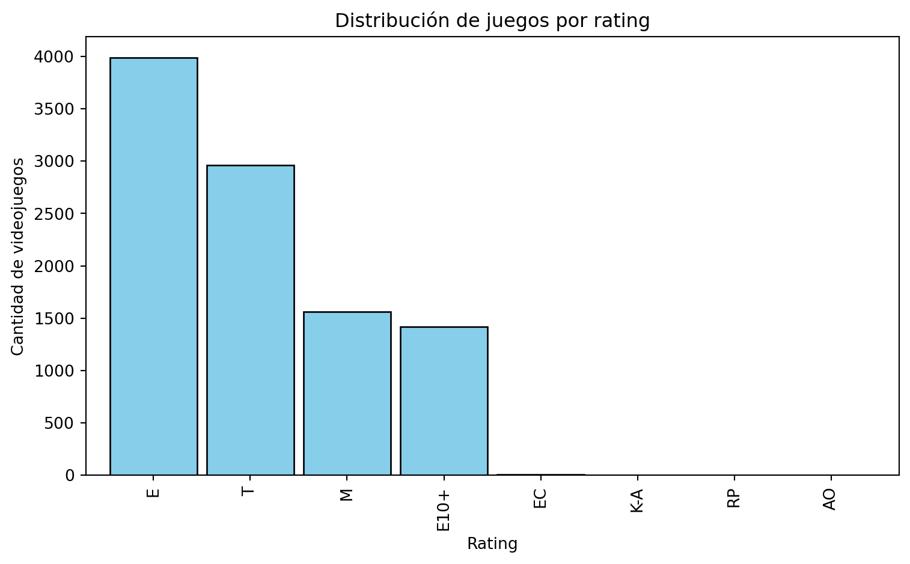
Los registros del dataset global que tienen datos para rating presentan cuatro categorías relevantes: E, T, M y E10+. En estas categorias debería estar la imputación de valores faltantes.
# Comportamiento de genre
games_rating['genre'].value_counts().sort_values(ascending = True).plot(kind='barh', color='orange', edgecolor='black', width = 0.9)
plt.title('Distribución de juegos por género')
plt.xlabel('Género')
plt.ylabel('Cantidad de videojuegos')
plt.tight_layout()
plt.show()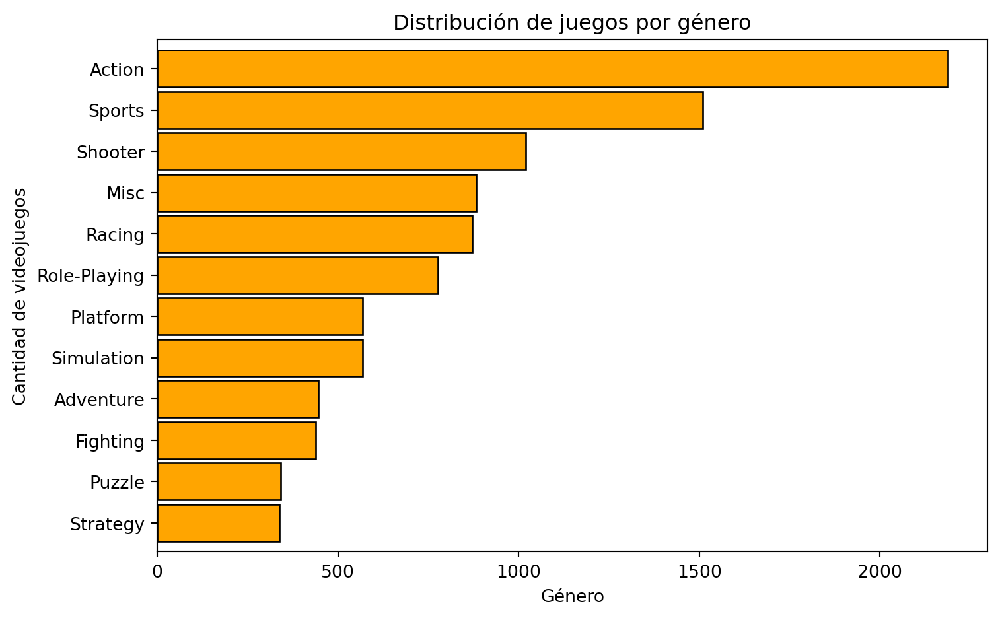
Los juegos de acción y deportes son los más frecuentes en el catalogo de juegos (que a su vez tienen información de rating)
# Comportamiento de las variables rating y genre
# Crear una tabla de dos estradas: genre y rating
pivot_rating = pd.pivot_table(data = games_rating[['genre','rating']],values ='rating', index = 'genre',columns = 'rating',aggfunc= 'size',fill_value=0)
# Crear un array auxiliar de orden de mayor a menor
order = pivot_rating.sum(axis=1).sort_values(ascending=False).index
# Graficar la tabla de doble entrada reorganizada
pivot_rating.loc[order].plot(
kind='bar',
stacked=True,
figsize=(12, 6),
colormap='tab10',
edgecolor='black'
)
plt.title('Rating por género')
plt.xlabel('Genero')
plt.ylabel('Cantidad de videojuegos')
plt.legend(title='Rating', bbox_to_anchor=(1.05, 1), loc='upper left')
plt.tight_layout()
plt.show()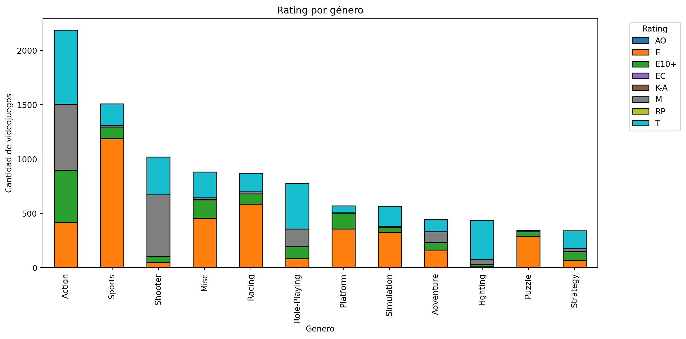
Para cada genero de juego se podría decir que hay un rating que domina, aunque no en todos los casos, como resulta con los juegos de genero de acción. Si bien podría mencionarse que se pueden imputar los valores más frecuentes (moda) por género de juego el resultado podría generar información sesgada hacia un valor de rating especifico que distoprsionaria la realidad del mercado de videojuegos. Es posible que exista una relación entre el genero del juego y el rating.
2.3.5.2 Variable rating parte 2
# Verificar si existe correlación entre la variable rating y genre
# Crear un dataframe para pasar de string a enteros los valores de la variable rating
rating_num = pd.DataFrame({'rating':games_rating['rating'].unique(),'rating_code':np.arange(0,games_rating['rating'].nunique())})
# Crear un dataframe para pasar de string a entero los valores de la variable string
genre_num = pd.DataFrame({'genre':games_rating['genre'].unique(),'genre_code':np.arange(0,games_rating['genre'].nunique())})
# Agregar las variables codificadas al dataset
games_rating = games_rating.merge(rating_num, on ='rating', how = 'left')
games_rating = games_rating.merge(genre_num, on ='genre', how = 'left')
# Evaluar la correlación entre las dos variables
print(f"La correlación entre la variable rating y genre es de: {round(games_rating['rating_code'].corr(games_rating['genre_code']),2)}")La correlación entre la variable rating y genre es de: 0.27La correlación entre genre y rating es mínima, no se podría usar como un referente que permita imputar los valores ausentes de rating
# Verificar si existe influencia de alguna variable adicional, en este caso, se usar 'platform' creando una variable combinada
genre_platform = games_rating['platform'] + '-' + games_rating['genre']
genre_platform.name = 'genre_platform'
# Agregar al dataset la variable combinada
games_rating['genre_platform'] = genre_platform
# Codificar la variable combinada
genre_platform_num = pd.DataFrame({'genre_platform':games_rating['genre_platform'].unique(),'genre_platform_code':np.arange(0,games_rating['genre_platform'].nunique())})
# Agregar al dataset la variable combinada codificada
games_rating = games_rating.merge(genre_platform_num, on ='genre_platform', how = 'left')
# Evaluar la correlación
print(f"La correlación entre la variable rating, genre y platform es de: {round(games_rating['rating_code'].corr(games_rating['genre_platform_code']),2)}")La correlación entre la variable rating, genre y platform es de: 0.01La correlación entre genre, platform y rating es todavía menor, la combinación de las dos variables y su comparación frente a rating no tienen relación
Se planteba como propuesta la evaluación de la existencia de alguna relación entre la variable rating y genre (luego combinada con platform), la relación supondría tener información que permitiera imputar valores para aquellos registros donde rating se desconoce, sin embargo las dos correlaciones propuestas tienen valores muy bajos, esto es, no se tiene información en otras variables que permitan orientar los valores de rating. La variable rating es independiente de las variables genre y platform.
No se realiza imputación para la variable rating
2.3.6 Demás variables con NaN
Las variables:
critic_score: 51.32% de NaN
user_score: 54.59% de NaN
Obedecen a percepciones subjetivas respecto a la visión de los juegos (en los que habra uns criterios definidos específicos para establecer un score definitivo). Asignar mediante imputación por media o mediana estos valores generarían sesgo en la información resultante. Lo anterior si se tiene en cuenta que las dos variables tienen más de la mitad de sus registros sin información. En conclusión estas variable queda con los valores NaN existentes. Si se requieren análisis de datos en función de estas variables lo más acertado sería excluir aquellos registros que presenten NaN en la columna eobjeto de evaluación y mencionar que el analisis y sus conclusiones están limitadas a la disponibilidad de datos.
2.3.7 Resultado de tratamiento de NaN
valoresAusentes(games)
la variable critic_score presenta 8578 valores ausentes (51.32%)
Es una variable númerica que toma valores entre 13.0 y 98.0
la variable user_score presenta 9125 valores ausentes (54.59%)
Es una variable númerica que toma valores entre 0.0 y 9.7
la variable rating presenta 6766 valores ausentes (40.48%)
Es una variable no numérica que toma los siguientes valores:
['E', nan, 'M', 'T', 'E10+', 'K-A', 'AO', 'EC', 'RP'][{'variable': 'critic_score',
'tipo': 'float64',
'nan': 8578,
'porcentaje_nan': 51.32},
{'variable': 'user_score',
'tipo': 'float64',
'nan': 9125,
'porcentaje_nan': 54.59},
{'variable': 'rating',
'tipo': 'object',
'nan': 6766,
'porcentaje_nan': 40.48}]Posibles razones de ausencia de datos
En el caso de las variables name, year_of_release y genre la ausencia de datos puede deberse a debilidades en la captura de la información, esto teniendo en cuenta que es poco probable que la información no exista (que no se conozca el nombre del videojuego, el año de lanzamiento del juego o el genero del mismo).
Para las demás variables, las relacionadas con calificación o puntaje, es probable que dicha información no exista, esto es, que el título no se haya incluido en el sistema de calificación, que no existiese un sistema para capturar estos datos. Algunas de estas variables dependen del usuario y en este caso que no sea obligarotio calificar el juego. Algunos juegos pueden carecer de popularidad por lo que se hace aún más complejo capturar información de calificación del juego.
2.3.8 Revisión de datos duplicados
# Verificar si hay registros (completos) duplicados
print(f"Registros duplicados en el conjunto de datos de videojuegos: {games.duplicated().sum()}")
print()
# Hacer una lista del conteo de la cantidad de veces que aparece el juego basado en el nombre, plataforma y año de lanzamiento
games_list = games[['name','platform','year_of_release']].value_counts()
# Filtrar solo los que aparecen más de una vez
print("Lista de juegos repetidos por nombre: ")
games_list = games_list[games_list>1].reset_index()
print(games_list)Registros duplicados en el conjunto de datos de videojuegos: 0
Lista de juegos repetidos por nombre:
name platform year_of_release count
0 Madden NFL 13 PS3 2012 2
1 unknown GEN 1993 22.3.8.1 Consolidar la información de los duplicados
# Cruzar la lista anterior con el dataset original para obtener los datos del registro completo
duplicates = games.merge(games_list[['name', 'platform']], on=['name', 'platform'], how='inner')
# Unificar los registros por juego en uno solo (sumando las ventas)
# Función para calcular moda en columnas no numéricas
def mode_or_first(x):
if x.mode().empty:
# Por si no hay moda toma el primer valor
return x.iloc[0]
else:
# por si hay varias modas toma el rpimer valor
return x.mode().iloc[0]
# Agrupar los juegos ya identificados como duplicados
grouped = duplicates.groupby(['name','platform','year_of_release']).agg({
'genre':mode_or_first,
'na_sales': 'sum',
'eu_sales': 'sum',
'jp_sales': 'sum',
'other_sales':'sum',
'critic_score':mode_or_first,
'user_score':mode_or_first,
'rating': mode_or_first
}).reset_index()
print(grouped) name platform year_of_release genre na_sales eu_sales \
0 Madden NFL 13 PS3 2012 Sports 2.11 0.23
1 unknown GEN 1993 Misc 1.78 0.53
jp_sales other_sales critic_score user_score rating
0 0.00 0.23 83.0 5.5 E
1 0.03 0.08 NaN NaN NaN 2.3.8.2 Eliminar los duplicados
# Crear un df de paso que tiene los datos de los juegos duplicados para cruzar con el dataset global de juegos
games_list_keys = games_list[['name','platform','year_of_release']]
# Indicator: una bandera ára indicar de qué df viene cada fila, esa mandera queda en una columna que se llama "_merge"
# Se requieren las columnas en donde aparezca "both", esto es, está en ambos df
# ['_merge'] == 'both' para extraer solo la columna con la bandera y convertir a una serie de boleanos en la que solo aparece True donde hubo coincidencia en ambos df
filtro = games.merge(games_list_keys, on=['name','platform','year_of_release'], how='left', indicator=True)['_merge'] == 'both'
# Excluir del dataset los juegos duplicados (todos los false)
games = games[~filtro]
# Agregar las filas resultado de la agrupación
games = pd.concat([games, grouped], ignore_index=True)No existen registros totalmente duplicados. Pese a esto al revisar la existencia de juegos duplicados se encontraron dos situaciones:
1) Hay cuatro registros que hacen referencia a dos juegos, es decir, cada juego está duplicado, el primero tiene nombre desconocido “unknown” y el segundo Madden NFL 13. Ambos aparecen con el mismo nombre, la misma plataforma y el mismo año de lanzamiento, los valores de ventas son diferentes y para uno de ellos hay en uno de los registros información de score mientras que no para el otro. Para solucionar estos registros duplicados se agrupan y se agregan valores de venta mediante suma, en el caso del score y genero se establece como agrupación la moda o el primer registro (en caso que no se pueda calcular la moda)
2) Se encuentran registros que incluyen en el nombre del juego detalles como jp sales, US sales, etc., observando que hacen referencia al mismo juego en el que los registros detallan las ventas por region y no están consolidadas en las variables que contiene el dataset. Frente a esto se plantea la agrupación (con suma de valores por venta) y los datos comunes como el genero o calificación (similar a lo planteado en el punto 1). Para este caso se realiza la identificación clara de cada juego y luego la agrupación por juego, año y plataforma.
2.3.8.3 Agrupar juegos desagregados por ventas en regiones (para los que existe un registro segun ventas por region)
# Copia del dataset
games_split = games.copy()
# Divivir la columna de nombre en la apertura de paréntesis creando una columna adicional con el complemento del nombre (lo que va después del paréntesis)
games_split[['name','name_part2']] = games_split['name'].str.split('(',expand = True)
# Quitar espacios en blanco antes y después del nombre
games_split['name'] = games_split['name'].str.strip()
# Eliminar el peréntesis de cierre
games_split['name_part2'] = games_split['name_part2'].str.replace(')','').str.strip()
# Función para agrupar en una sola celda la parte del nombre que venía entre paréntesis cuando varias filas quedan agrupadas
def concatenar(x):
string = ''
for i in x:
string = string + " " + str(i)
return string.strip()
# Agrupara para generar un nuevo dataset
games_split_grouped = games_split.groupby(['name','platform','year_of_release']).agg({
'genre':mode_or_first,
'na_sales': 'sum',
'eu_sales': 'sum',
'jp_sales': 'sum',
'other_sales':'sum',
'critic_score':mode_or_first,
'user_score':mode_or_first,
'rating': mode_or_first,
'name_part2': concatenar
}).reset_index()
games = games_split_grouped.iloc[:,:-1]Los pasos aplicados dan resultado de 106 menos, es decir, como resultado de la agrupacion se eliminaron 106 registros duplicados. Pese a esto, la verificar de manera aleatoria nuevamente los nombres, las plataformas y el año aun se observan juegos duplicados debido a errores en la escritura (generalmente en ortografía), por ejemplo, ‘Brave Story: New Traveler’ y ‘Brave Story: New Traveller’ ambos del año 2006 para PSP, uno de los casos observados en un chequeo visual del dataset, sin embargo, pueden existir casos similares.
2.4 Ventas Totales
games['total_sales'] = games['na_sales'] + games['eu_sales'] + games['jp_sales'] + games['other_sales']3. Analizar los datos
# Listado de juegos
games_unique = games[['year_of_release','name']].drop_duplicates()
# Listado de plataformas
platform_unique = games['platform'].drop_duplicates().reset_index(drop = True)3.1 Lanzamiento de juegos por año
games_by_year = games_unique.groupby('year_of_release')['name'].size()
# Gráfico de barras lanzamiento de juegos por año
# base del gráfico
plt.figure(figsize=(12, 6))
games_by_year.plot(kind='bar',
color='skyblue',
edgecolor='black',
width=0.9)
# Detalles del gráfico
plt.title('Cantidad de juegos por año de lanzamiento', fontsize=14)
plt.xlabel('Año de lanzamiento', fontsize=12)
plt.ylabel('Número de juegos', fontsize=12)
plt.xticks(rotation=45, ha='right')
plt.grid(axis='y', linestyle='--', alpha=0.7)
# Plotear
plt.tight_layout()
plt.show()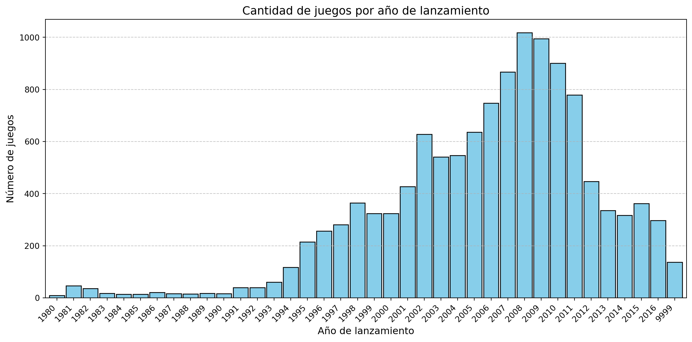
La cantidad de juegos que salen al mercado son coherentes con los niveles de avance tecnológico en materia computacional y de gráficos. Durante la decada de los 80’s la industria era bastante pequeña (en cuestión de la cantidad de juesgos en el mercado), ya para la decada de los 90’s (finalización del sigo XX) la disponibilidad de juegos en el mercado empieza a aumentar considerablemnete hasta alcanzar su pico más alto al finalizar la promera década del siglo XXI. Ya iniciando la segunda década del siglo XXI la cantidad de juegos empieza a disminuir hasta alcanzar número similares a la finalización del siglo XX
3.2 Ventas por plataforma
total_sales_by_platform = games[['platform','total_sales']].groupby('platform',observed=True)['total_sales'].sum().sort_values(ascending = False).to_frame()
# Agregar columna con porcentaje acumulado
total_sales_by_platform['pct_acumulado'] = round(total_sales_by_platform['total_sales'].cumsum(axis = 0)/total_sales_by_platform['total_sales'].sum(),5)*100
# Extraer los indices como culumna
total_sales_by_platform = total_sales_by_platform.reset_index()# Gráfico de barras global de ventas por plataforma 1980 - 2016
# base de gráfico
fig, ax1 = plt.subplots(figsize=(12, 6))
# Gráfico de barras para la columna total_sales
ax1.bar(total_sales_by_platform['platform'],
total_sales_by_platform['total_sales'],
color='mediumseagreen',
edgecolor='black')
# Detalles del gráfico de barras
ax1.set_xlabel('Plataforma',
fontsize=12)
ax1.set_ylabel('Ventas totales (USD millones)',
fontsize=12,
color='mediumseagreen')
ax1.tick_params(axis='y', labelcolor='mediumseagreen')
plt.xticks(ticks=range(len(total_sales_by_platform['platform'])),
labels=total_sales_by_platform['platform'],
rotation=45,
ha='right')
ax1.grid(axis='y',
linestyle='--',
alpha=0.5)
# Gráfico de línea para porcentaje acumulado
ax2 = ax1.twinx() # Agregar eje secundario
ax2.plot(total_sales_by_platform['platform'],
total_sales_by_platform['pct_acumulado'],
color='blue',
marker='o',
linewidth=2)
ax2.set_ylabel('Porcentaje acumulado (%)',
fontsize=12,
color='blue')
ax2.tick_params(axis='y',
labelcolor='blue')
ax2.set_ylim(0, 105)
# Agregar línea de corte del 80%
ax2.axhline(y=80,
color='red',
linestyle='--',
linewidth=1.5)
ax2.text(len(total_sales_by_platform) - 1,
80 + 1,
'80%',
color='red',
ha='right',
fontsize=10)
# Agregar línea de corte del 60%
ax2.axhline(y=60,
color='red',
linestyle='--',
linewidth=1.5)
ax2.text(len(total_sales_by_platform) - 1,
60 + 1,
'60%',
color='red',
ha='right',
fontsize=10)
# Título del gráfico
plt.title('Ventas globales por plataforma y porcentaje acumulado (1980–2016)',
fontsize=14,
fontweight='bold')
# Plotear
plt.tight_layout()
plt.show()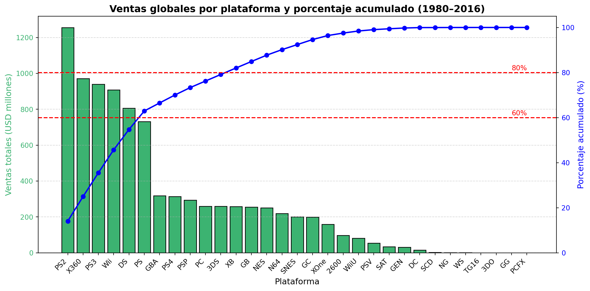
Entre los años 1980 y 2016 seis plataformas presentan ventas totales considerablemente altas frente a las demás, estas superan los 600 millones de dólares mientras que las otras alcanzar un valor menor o igual a los 300 millones de dolares. Las primeras seis plataformas (un 19% del total) representan un valor cercano al 60% del total de ventas. De acuerdo a estas observaciones se toman las seis plataformas de mayor venta, a saber:
- PS2
- X360
- PS3
- Wii
- DS
- PS
3.3 Ventas y lanzamientos por plataforma por año
# Crear una lista con las 6 principales consolas o plataformas
b6_platform = total_sales_by_platform.loc[:5,'platform'].tolist()
# Filtrar el df original excluyendo las plataformas no seleccionadas
games_b6 = games[games['platform'].isin(b6_platform)].copy()
games_b6['platform'] = games_b6['platform'].astype('object')
# Pivot table con las ventas totales por año y por plataforma
games_b6_pivot = pd.pivot_table(games_b6,index = 'year_of_release',columns = 'platform',values = 'total_sales',aggfunc = 'sum',observed=False)
# Se excluye la información del año 1995 y de las ventas sin año definido para facilitar la visualización. El dato del año 1985 pertenece a la plataforma DS y el valor en ventas es de 0.01, lo que no afecta excluirlo de los datos a graficas
games_b6_pivot = games_b6_pivot.iloc[1:-1,:]
print(games_b6_pivot)platform DS PS PS2 PS3 Wii X360
year_of_release
1994 NaN 6.03 NaN NaN NaN NaN
1995 NaN 35.96 NaN NaN NaN NaN
1996 NaN 94.70 NaN NaN NaN NaN
1997 NaN 136.17 NaN NaN NaN NaN
1998 NaN 169.49 NaN NaN NaN NaN
1999 NaN 144.53 NaN NaN NaN NaN
2000 NaN 96.37 39.17 NaN NaN NaN
2001 NaN 35.59 166.43 NaN NaN NaN
2002 NaN 6.67 208.76 NaN NaN NaN
2003 NaN 2.07 193.05 NaN NaN NaN
2004 17.27 NaN 212.13 NaN NaN NaN
2005 130.14 NaN 163.70 0.19 NaN 9.22
2006 119.81 NaN 103.99 20.96 140.19 51.80
2007 147.24 NaN 76.10 73.19 153.41 95.41
2008 145.35 NaN 53.90 118.79 177.68 136.07
2009 119.56 NaN 26.40 130.93 206.97 120.82
2010 85.35 NaN 5.64 142.96 128.67 170.60
2011 26.33 NaN 0.45 157.98 59.79 145.23
2012 11.67 NaN NaN 108.28 22.94 100.72
2013 1.54 NaN NaN 113.25 8.59 88.58
2014 NaN NaN NaN 47.76 3.75 34.74
2015 NaN NaN NaN 16.82 1.14 11.96
2016 NaN NaN NaN 3.60 0.18 1.52# Grafico de tendencia en el tiempo de las ventas por plataforma
# Base del gráfico
plt.figure(figsize=(12, 6))
# Dibujar línea por línea
for column in games_b6_pivot.columns:
if column in ['PS','PS2','PS3']:
line = '--'
elif column in ['DS','Wii']:
line = ':'
else:
line = '-.'
plt.plot(
games_b6_pivot.index,
games_b6_pivot[column],
label=column,
marker='.',
linestyle=line,
linewidth=2
)
# Detalles del gráfico
plt.title('Ventas globales por año para las 6 plataformas principales',
fontsize=14,
fontweight='bold')
plt.xlabel('Año de lanzamiento',
fontsize=12)
plt.ylabel('Ventas totales (USD millones)',
fontsize=12)
plt.grid(True, linestyle='--',
alpha=0.5)
plt.legend(title='Plataforma',
fontsize=10)
# Plotear
plt.tight_layout()
plt.show()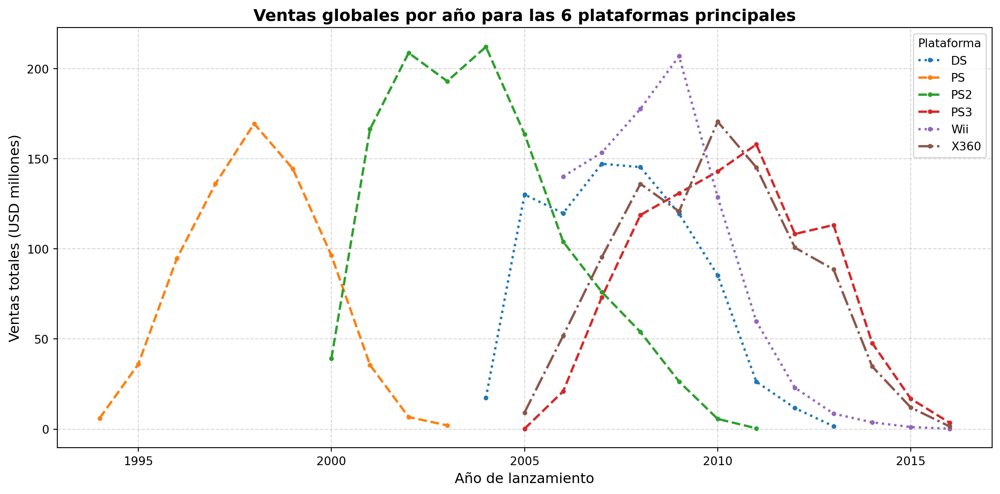
Las plataformas creadas por SONY tienen 3 de las seis seleccionadas con mayores ventas de los juegos que corren en estas, al respecto se pude destacar que:
- El lanzamiento de una nueva plataforma, se hace cada 6 años
- El tiempo de vida (en ventas de juegos) de las plataformas es algo más de 10 años.
- La plataforma PS2 es la que registra mayor volumen de juegos vendidos (en millones de USD superior a 175).
- Los resultados de ventas de juegos para la plataforma sucesora de PS2, esto es, PS3, no presenta los mismos niveles de venta, aunque parece tener ventas más estables a lo largo del tiempo.
En este sentido las plataformas producidas por SONY son las más populares en este periodo de tiempo.
Las plataformas manufacturadas por NINTENDO tienen 2 de las seleccionadas en relación al volumen de ventas de juegos, frente a estas cabe resaltar que:
- El tiempo de vida (en venta de juegos) es similar a las plataformas de SONY, algo más de 10 años.
- La información de las dos plataformas disponibles muestran inicios de ventas de juego muy cercanos, esto es, el lanzamiento de la plataforma de Wii respecto a DS, tiene una diferencia de alrededor de 2 años.
- Wii se muestra como la plataforma con el mayor volumen inicial de ventas de juegos, el primer año alcanza ventas de juegos cercanas a los 125 millones de dólares.
3.3.1 Ventas por plataforma por año y por creador (o fabricante) de plataforma
Para tener un detalle mayor del comportamiento de la popularidad de las plataformas se incluye al conjunto de datos el nombre de las empresas fabricantes de las plataformas.
# Diccionario con los datos de la corporación manufacturera de cada plataforma (generada con ayuda de IA Copilot)
corporation = {'Wii': 'Nintendo','NES': 'Nintendo','GB': 'Nintendo',
'DS': 'Nintendo','3DS': 'Nintendo','SNES': 'Nintendo',
'GBA': 'Nintendo','N64': 'Nintendo','WiiU': 'Nintendo',
'GC': 'Nintendo','GG': 'Sega','GEN': 'Sega','DC': 'Sega',
'SAT': 'Sega','SCD': 'Sega','PS': 'Sony','PS2': 'Sony',
'PS3': 'Sony','PS4': 'Sony','PSP': 'Sony','PSV': 'Sony',
'X360': 'Microsoft','XB': 'Microsoft','XOne': 'Microsoft',
'PC': 'Other','2600': 'Other','TG16': 'Other','PCFX': 'Other',
'3DO': 'Other','WS': 'Other','NG': 'Other'}# Crear una columna vacia en el dataset de juegos
games['corporation'] = ''
# Asignar el dato de la coporación creadora en la columna "corporation"
for i in range(len(games)):
games.loc[i,'corporation'] = corporation[games.loc[i,'platform']]
# Crear un df auxiliar con datos agrupados por corporación, plataforma y año de lanzamiento del juego con el valor total de ventas
games_by_corporation = games.groupby(['corporation','platform','year_of_release'], observed=True)['total_sales'].sum().reset_index()#Función para análisis plataformas por desarrollador
def byPlatformManufacturer(data,corporation):
'''
Args:
data (DataFrame): Must include the following columns: "corporation", "platform", "year_of_release", and "total_sales".
corporation (str): Name of the corporation to be processed.
Return:
data_corporation (DataFrame): Pivoted summary of total sales for the specified corporation.
'''
# Filtro solo con las plataformas de la corporación que las fabrica
data_corporation = data[data['corporation'] == corporation].iloc[:,1:]
data_corporation = data_corporation.pivot(index = 'year_of_release', columns = 'platform',values = 'total_sales')
data_corporation = data_corporation[data_corporation.index != 9999]
# Gráfico para corporación
plt.figure(figsize=(12, 6))
# Dibujar línea por línea
for column in data_corporation:
plt.plot(
data_corporation.index,
data_corporation[column],
label=column,
marker='.',
linewidth=2)
# Detalles del gráfico
title = 'Ventas globales por año para las plataformas de '+ str(corporation)
plt.title(title,
fontsize=14,
fontweight='bold')
plt.xlabel('Año de lanzamiento',
fontsize=12)
plt.ylabel('Ventas totales (USD millones)',
fontsize=12)
plt.grid(True, linestyle='--',
alpha=0.5)
plt.legend(title='Plataforma',
fontsize=10)
# Plotear
plt.tight_layout()
plt.show()
return data_corporation3.3.1.1 Plataformas de Sony
games_by_sony = byPlatformManufacturer(games_by_corporation, "Sony")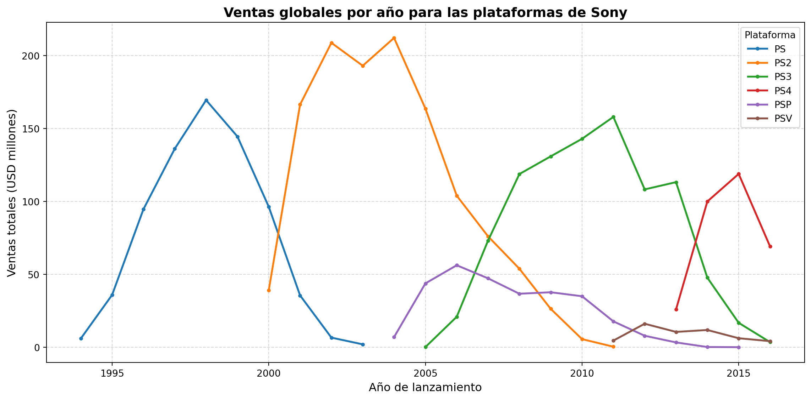
En general el comportamiento para las plataformas de Sony es el mismo que ya se había mencionado, para el caso de la PS4, el lanzamiento fue siete años después de su antesesora. Para esta familia de plataformas se puede mencionar que: 1) Tienen un tiempo de vida de alrededor de 11 años, es decir, tienden a desaparecer (en función de la venta de juesgos) después de ese periodo de tiempo 2) Los juegos vendidos para la plataforma alcanzan su nivel más alto de ventas entre el cuarto y quinto año 3) La venta de video juegos para la plataforma PS2 ha sido la de mayor volumen ya que: tiene el mayor número de ventas al iniciar y presenta el pico más alto de ventas en un año 4) Las plataformas PSV y PSP no presentan número altos como las otras plataformas de Sony. En el caso de la primera las venta de juegos están por debajo de los 25 millones de dólares y parece proyectar un ciclo de vida mucho más corto. En cuanto a la plataforma PSP el tercer año las venta de juegos se acercaron a los 50 millones de dólares, no obstante, desde aquí sus ventas descendieron hasta hacerse nulas para 2016; cabe resaltar que el ciclo de vida de esta plataforma si alcanzó los 11 años.
3.3.1.2 Plataformas de Nintendo
games_by_nintendo = byPlatformManufacturer(games_by_corporation, "Nintendo")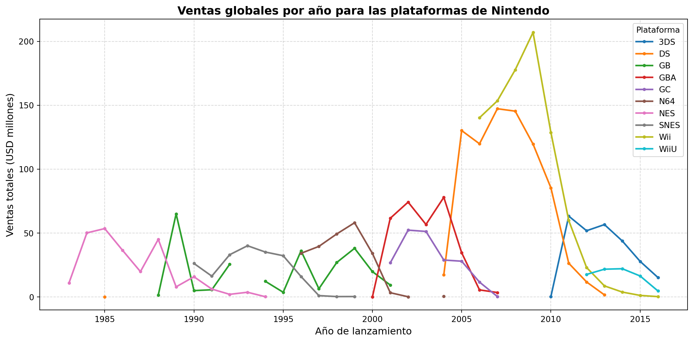
Para Nintendo, las dos plataformas de mayor venta de video juegos son Nintendo Wii (vigente desde 2006) y Nintendo DS (vigente desde 2004), la diferencia entre lanzamientos es de apenas 2 años, no obstante, hay que tener en cuenta que una plataforma es portatil así que los mercados podrían catalogarse como diferentes o no excluyentes entre compradores. Si se compara las plataformas NES y SNES existe una diferencia de 8 años del lanzamiento de la segunda respecto a la primera. Respecto a estas dos la primera alcanzó su mayor pico de ventas de juegos en el tercer año (algo más de 50 millones de dólares), y vigente en el mercado por 12 años. En cuanto a la segunda el pico de venta de juego lo alcanza al cuarto año aunque no alcanza los 50 millones de dólares de ventas en ese año. Nintendo 64 aparece 7 años después de entrada al mercado de SNES y se mantiene por 5 años en el mercado su pico de ventas de juegos se alcanza al cuarto año. 5 años después del lanzamiento de Nintendo 64 aparece la plataforma Game Cube que está en el mercado por 7 años, alcanza su pico de ventas de juegos en el segundo año aunque el tercer año presenta numeros de ventas similares. Un año antes de Gabe Cube lanzan Gameboy Advance que alcanza su mayor venta de juegos en el año 5, en este caso, supera los 75 millones de dólares, siendo el pico de ventas por año más alto, hasta ese momento (segun datos disponibles), la plataforma se mantiene vigente hasta 2007. En el caso de las plataformas portátiles, 4 años despues del lanzamiento de Gameboy Advance aparece Nintendo DS que en el segundo y tercer año tiene ventas en juegos superiores a los 100 millones de dólares, en el cuarto año alcanza su pico más alto de ventas de juegos aunque el quinto las ventas fueron ligeramente menores que el cuarto, ambos años con ventad de juegos por encima de los 125 millones de dólares, esta plataforma tiene registro de ventas de juegos hasta el año 2013. La plataforma Wii aparece en el año 2006, 5 años después del lanzamiento de Game Cube, esta plataforma inicia con ventas de juegos cercanos a los 125 millones de dólares y alcanza su pico más alto de ventas de juegos al cuarto año, alcanzando un valor de ventas de juegos superior a los 175 millones de dólares.La plataforma se mantiene registros hasta 2016. Siete años después del lanzamiento de Nintendo DS aparece en el mercado la plataforma DS3 que para el primer año alcanza su nivel más alto de ventas de juegos (por encima de los 50 millones de dólares) y se mantiene vigente hasta 2016 con un descenso en ventas de juegos continuo desde el año 2014. Finalmente, 6 años después del lanzamiento de Nintendo Wii, aparece en el mercado la plataforma WiiU (año 2012), esta presenta ventas de videojuegos por debajo de los 25 millones de dólares y desde el año 2014 las ventas se mantienen en descenso.
En terminos generales, para el caso de nintendo, las plataformas se lanzan cada 6 o 7 años (teniendo en cuenta que manejan dos esquemas, las portatiles y las no portatiles) y el tiempo de vida en el mercado segun la venta de juegos es alrededor de 10 años, las ventas de los juegos va en aumento a lo largo del tiempo aunque las últimas dos plataformas presentan niveles de ventas muy bajos en comparación con sus predecesoras.
3.3.1.3 Plataformas de Microsoft
games_by_microsoft = byPlatformManufacturer(games_by_corporation, 'Microsoft')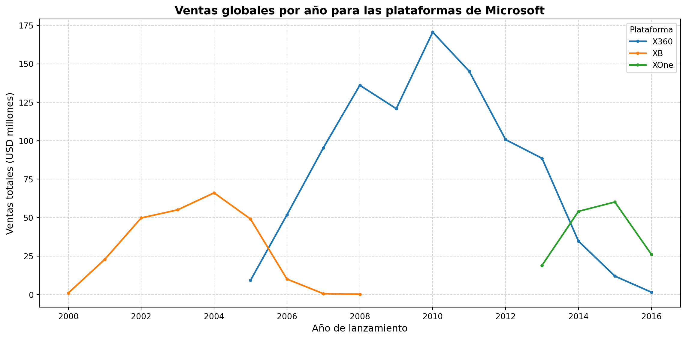
Para Microsoft los datos solo presentan tres plataformas, al respecto se observa que: 1) El primer lanzamiento (XB) fue en el año 2000 y estuvo vigente por 10 años, el mayor volumen de ventas de juegos lo alcanzó en el quinto año (algo más de 60 millones de dólares). 2) La segunda plataforma (X360) se lanza 6 años después de XB y es la que presenta mayor registro de ventas de vodeojuegos alcanzado un valor cercano a los 160 millones de dólares en su sexto año de vida, para 2016 (12 años) aun presenta ventas (aunque considerablemente bajas, esto es, cercanas a cero). 3) La tercera plataforma (XOne) fue lanzada en 2013, 8 años después de su predecesora, Para 2016 se observa que el nivel de ventas a descendido ya que el volumen de ventas más alto observado se encuentra en 2015 con ventas de video juegos en millones de dólares superior a 50.
3.3.1.4 Ventas de video juegos por corporación
# Crear tabla de doble entrada con años y fabricante
games_by_corp_all = pd.pivot_table(data = games, values='total_sales',index = 'year_of_release',columns = 'corporation', aggfunc = 'sum').iloc[:-1,:]
plt.figure(figsize=(12, 6))
games_by_corp_all.plot(kind = 'line',
marker = '.',
)
# Detalles del gráfico
plt.title('Ventas de videojuegos por año por fabricante',
fontsize=12,
fontweight='bold')
plt.xlabel('Año de lanzamiento',
fontsize=10)
plt.ylabel('Millones de USD',
fontsize=10)
plt.grid(True, linestyle='--',
alpha=0.5)
plt.legend(title='Fabricante',
fontsize=8)
# Plotear
plt.tight_layout()
plt.show()<Figure size 1152x576 with 0 Axes>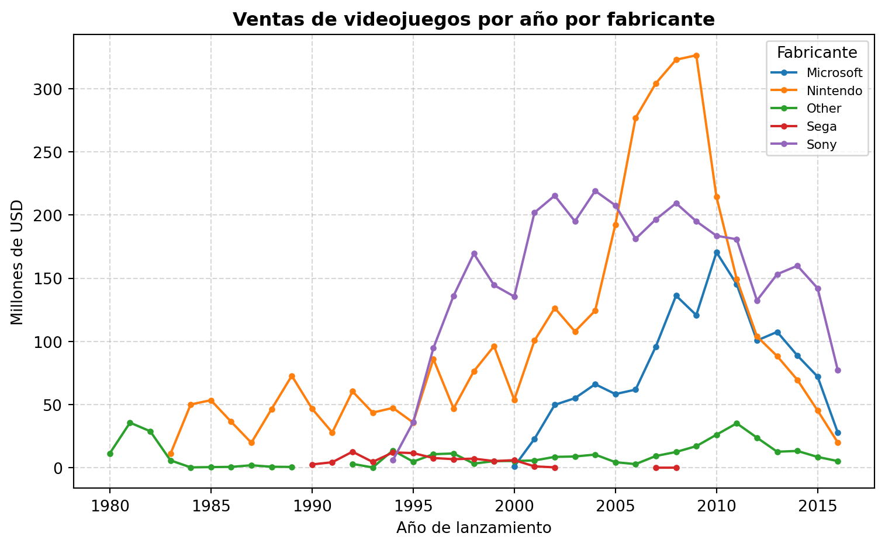
Conslusiones generales ventas y lanzamientos por plataforma por año
El comportamiento de las plataformas de videojuegos en cuando a las ventas de estos varian de un fabricante a otro, sin embargo, se puede extractar que:
- Nintendo y Sony presentan ventas (de juegos) superiores a Microsoft, resaltando que también llevan más tiempo en el mercado.
- Los tiempos de vigencia de las plataformas en el mercado se marca ligeramente menor para las fabricadas por Nintendo.
- En general los fabricantes lanzan nuevas plataformas en lapsos de 7 años y alcanzan picos de ventas de sus juegos alrededor del 4 año.
- Pese a que la tendencia de los últimos 5 años muestran descenso en las ventas de videojuegos, los desarrollados para Sony parecen tener mayor estabilidad en las ventas a lo largo del tiempo.
Datos relevantes
Con base en las conclusiones de los puntos anteriores se tiene:
- El mercado de los primeros años del siglo presente muestra la transformación que han tenido la venta de videojuegos, es decir, muestra datos actualizados del comportamiento del mercado.
- Los primeros años del siglo XXI reflejan los fabricantes mas importantes en esta industria, que condiciona el desarrollo y venta de videojuegos, que están creados para las plataformas de estos fabricantes.
- La fabricación y actualización de las plataformas líderes en el mercado están reflejadas en los datos disponibles desde el año 2000, estos incluyen información del tiempo de vida las plataformas y los periodos de tiempo entre lanzamientos de nuevas plataformas.
En conclusión, se tomarán los datos del año 2000 a 2015, se excluyen los datos de la vigencia 2016 ya que presentan información parcial, esto tendiendo en cuenta que se informo que “Es posible que los datos de 2016 estén incompletos.”, sumado a lo anterior las plataformas relevantes están incluidas en aquellas desarroladas por Sony, Microsoft o Nintendo.
3.4 Reduccion del dataset: datos relevantes
# Filtrar los datos por años y corporaciones de interés
games_red = games[(games['year_of_release']>=2000) & (games['year_of_release']<2016) & ((games['corporation'] == 'Sony') | (games['corporation'] == 'Microsoft') | (games['corporation'] == 'Nintendo'))]
# Plataformas disponibles en los datos
print(f"El total de plataformas disponibles después de la reducción del conjunto de datos es de: {games_red['platform'].nunique()}")
# List of corporations
manufacturers = ['Sony','Microsoft','Nintendo']El total de plataformas disponibles después de la reducción del conjunto de datos es de: 173.4.1 Comportamiento por fabricante
# Tabla de doble entrada para tendencia por fabricante
games_red_corp = pd.pivot_table(data = games_red,values = 'total_sales',index = 'year_of_release',columns = 'corporation',aggfunc = 'sum')
# Gráfico de la tendencia de ventas de videojuegos por fabricante de plataformas
plt.figure(figsize=(12, 6))
games_red_corp.plot(kind = 'line',
marker = '.')
# Detalles del gráfico
plt.title('Ventas de videojuegos por año por fabricante',
fontsize=12,
fontweight='bold')
plt.xlabel('Año de lanzamiento',
fontsize=10)
plt.ylabel('Millones de USD',
fontsize=10)
plt.grid(True, linestyle='--',
alpha=0.5)
plt.legend(title='Fabricante',
fontsize=8)
# Plotear
plt.tight_layout()
plt.show()<Figure size 1152x576 with 0 Axes>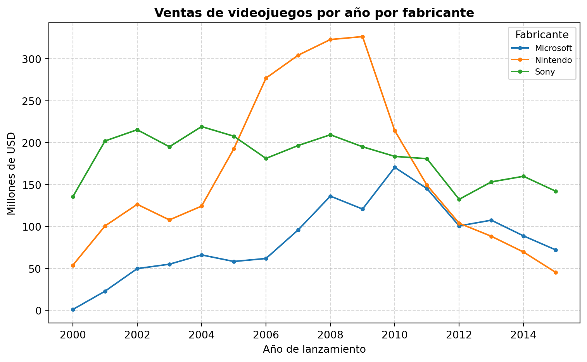
# Dataset organizado por fabricante
games_red_by_corporation = games_red.groupby(['corporation','platform','year_of_release'], observed=True)['total_sales'].sum().reset_index()3.4.2 Plataformas potencialmente rentables
def alivePlatforms (data,corporation):
"""
Generar resumne de las plataformas activas por fabricante al finalizar 2015 a fin de identificar la plataforma líder de ventas en el último año.
Parameters.
----------
data : Must include the following columns: "corporation", "platform", "year_of_release", and "total_sales".
corporation : Name of the corporation to be processed..
Returns
-------
plataformas : Platforms by corporation active in 2015.
"""
# Llamar la función ya existente para organizar los datos por plataforma
plataformas = byPlatformManufacturer(data,corporation)
# Seleccionar solo las plataformas vigentes en 2015
for platform in plataformas:
datos = plataformas[platform][~plataformas[platform].isna()]
if max(datos.index) < 2015:
del(plataformas[platform])
# Eliminar filas con totalidad de datos NaN
plataformas.dropna(how='all', inplace = True)
return plataformas# Reducir el conjunto de datos a las plataformas que están vigentes en el mercado
active_platforms = dict()
for corp in manufacturers:
active_platforms[corp] = alivePlatforms(games_red_by_corporation,corp)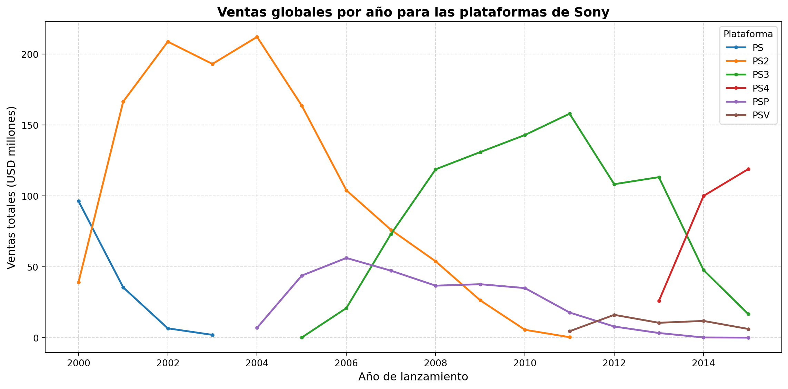
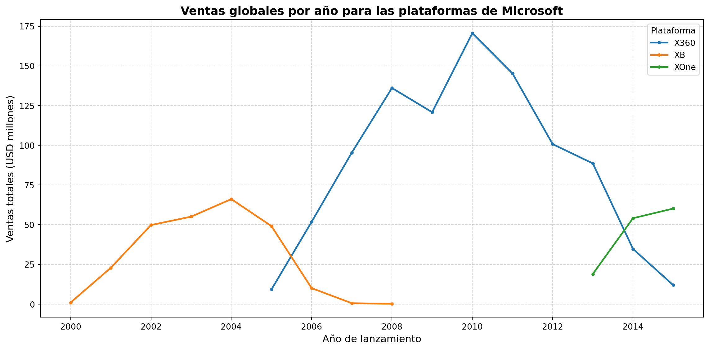
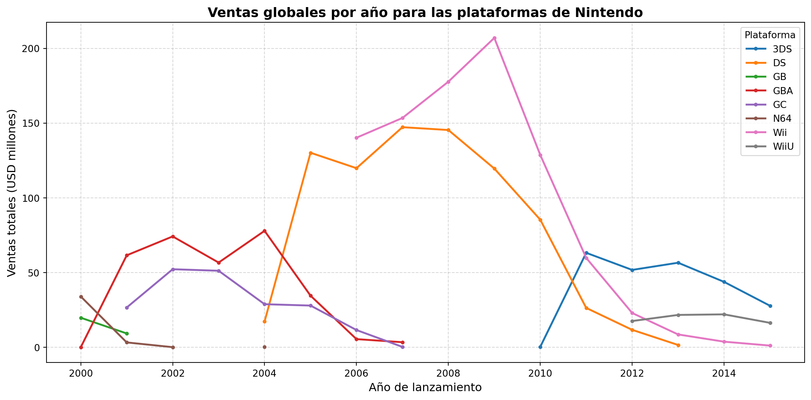
3.4.2.1 Visualización plataformas potencialmente rentables
colors = ['red','blue','orange','green','purple', 'brown']
for key in active_platforms.keys():
plt.figure(figsize=(12, 6))
for i,platform in enumerate(active_platforms[key]):
active_platforms[key][platform].plot(kind = 'line',
color = colors[i],
marker = "o")
# Detalles del gráfico
titulo = 'Plataformas potencialmente rentables de '+ key
plt.title(titulo,
fontsize=12,
fontweight='bold')
plt.xlabel('Año de lanzamiento',
fontsize=10)
plt.ylabel('Millones de USD',
fontsize=10)
plt.grid(True, linestyle='--',
alpha=0.5)
plt.legend(title='Plataforma',
fontsize=8)
# Plotear
plt.tight_layout()
plt.show()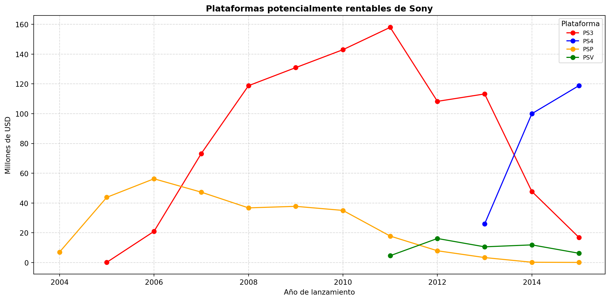
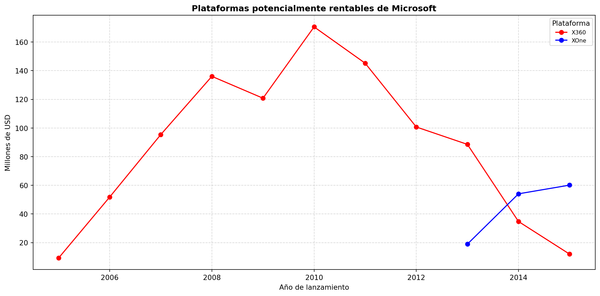
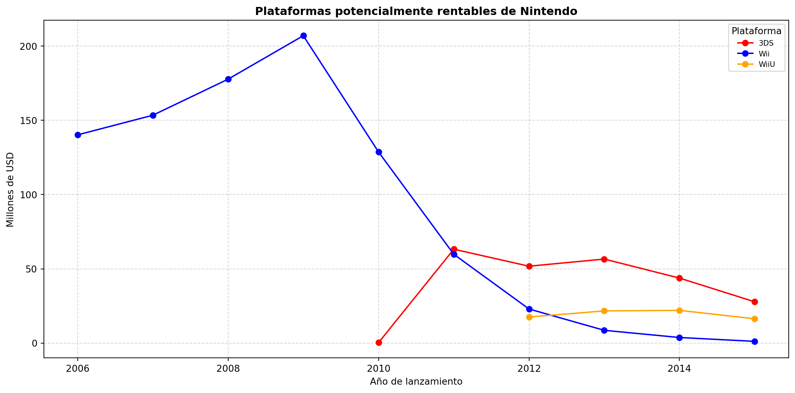
Plataformas de Sony La que muestra mayor potencial es PS4, que a su vez es una de las plataformas que presenta crecimiento en ventas de videojuegos para final de 2015 y con 3 años de vida en el mercado. De las plataformas PS3 y PSV se esperaría un número bajo de ventas de videojuegos, en el caso de PS3 viene con ventas descendentes bastante pronunciadas y una ciclo de vida ya de varios años, lo que supone su discontinuidad proximamente. Finalmente la plataforma PSP tiene ventas cercanas a cero en sus videojuego lo que estima que en los años subsiguientes no sea una buena opción.
Plataformas de Microsoft XOne es otra de las plataformas que observa crecimiento en ventas de videojuegos, sumado a esto cumple 3 años en el mercado. En el caso de X360 las ventas de videojuegos relacionados vienen en constante caida además de tener una vida bastante larga, sobre esta se esperaría ventas nulas proximamente y fin de su ciclo de vida
Plataformas de Nintendo Son las de menor proyección DS3, Wii y WiiU vienen con ventas de videojuegos descendentes. En el caso de Wii las ventas de sus videojuegos se aproximan a cero, adicional a esto la cantidad de años en el mercado dejan ver que su ciclo de vida está cerca de su fin. WiiU es la plataforma más reciente pero sus ventas son bajas, aún así se esperan ventas en los proximos años. 3DS está aproximadamente en la mitad de su ciclo de vida, sus ventas, es posible que se mantenga con bajas ventas los años que tiene antes de ser, posiblemente, reemplazada por una nueva plataforma.
En conclusión:
- PS4 y XOne son las plataformas líderes en ventas al final del periodo evaluado.
- PS3, PSV, 3DS y WiiU tienen proyección de ventas de video juegos moderadas.
- PSP, X360, Wii son plataformas que llevan tiempo en el mercado y es latente su discontinuidad por lo que no son relevantes para el mercado de videojuegos en el futuro.
3.5 Dispersión de las ventas por plataforma
# Lista de las plataformas seleccionadas como de mayor influencia
selected_platforms = ['PS4','XOne','PS3','PSV','3DS','WiiU']
# Listas de Series por plataforma para graficar
data_to_plot = [
games_red[games_red['platform'] == platform]['total_sales']
for platform in selected_platforms]
# Lista de promedios por plataforma
medias = [data.mean() for data in data_to_plot]# Crear lienzo de gráfico
fig, axes = plt.subplots(1, 2, figsize=(14, 6))#, sharex=True)
# Gráfico con outliers
axes[0].boxplot(data_to_plot, tick_labels=selected_platforms, showfliers=True)
axes[0].set_title('Totalidad de dispersión de datos de ventas')
axes[0].set_xlabel('Plataforma')
axes[0].set_ylabel('Ventas totales (millones de USD)')
axes[0].grid(True, linestyle='--', alpha=0.5)
# Gráfico sin outliers
axes[1].boxplot(data_to_plot, tick_labels=selected_platforms, showfliers=False)
axes[1].set_title('Dispersión de datos de ventas reducido')
axes[1].set_xlabel('Plataforma')
axes[1].set_ylabel('Ventas totales (millones de USD)')
axes[1].grid(True, linestyle='--', alpha=0.5)
# Agregar marcador de la media
axes[1].plot(range(1, len(medias)+1), medias, '*', color='red', label='Promedio de ventas', markersize=7)
axes[1].legend(fontsize=8)
# Plotear
plt.suptitle('Distribución de ventas por plataforma', fontsize=14, fontweight='bold')
plt.tight_layout()
plt.show()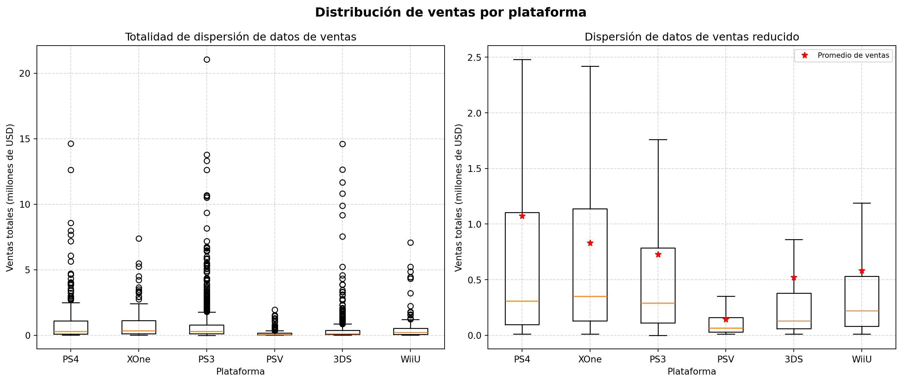
3.5.1 Deatlles de dispersión de las ventas por plataforma
# Genereación de describe por plataforma
for platform in selected_platforms:
print("\t"*2,platform)
print()
print(games_red[games_red['platform'] == platform]['total_sales'].describe())
print("\n") PS4
count 228.000000
mean 1.074079
std 1.899788
min 0.010000
25% 0.097500
50% 0.310000
75% 1.105000
max 14.630000
Name: total_sales, dtype: float64
XOne
count 160.000000
mean 0.832312
std 1.182243
min 0.010000
25% 0.130000
50% 0.350000
75% 1.137500
max 7.390000
Name: total_sales, dtype: float64
PS3
count 1279.000000
mean 0.727998
std 1.414306
min 0.000000
25% 0.110000
50% 0.290000
75% 0.785000
max 21.050000
Name: total_sales, dtype: float64
PSV
count 344.000000
mean 0.144070
std 0.231794
min 0.010000
25% 0.030000
50% 0.065000
75% 0.160000
max 1.960000
Name: total_sales, dtype: float64
3DS
count 468.000000
mean 0.520021
std 1.470323
min 0.010000
25% 0.060000
50% 0.130000
75% 0.380000
max 14.600000
Name: total_sales, dtype: float64
WiiU
count 133.000000
mean 0.583383
std 1.105384
min 0.010000
25% 0.080000
50% 0.220000
75% 0.530000
max 7.090000
Name: total_sales, dtype: float64
En general, las ventas entre plataformas son diferentes aunque algunas de estas presentan ciertas similitudes que permite agruparlas.
- Plataformas PS4 y XOne:
- La cantidad de resgistros de ventas en ambas plataformas es similar, esto teniendo en cuenta que son las plataformas más nuevas, se tienen 228 para PS4 y 160 para XOne.
- El 75% de los datos en ambos casos también es similar con 0.94 millones de dólares para PS4 y 1.04 millónes de dólares para XOne.
- La mediana de los datos presenta una ditnacia, entre ambas, similar a la ditancia que hay en el 75% de los datos. Para la PS4 es de 0.26 y para XOne de 0.32
- Al comparar las medias las diferencias ya son más pronunciadas, en este caso la media para las ventas de PS4 es mayor con un valor de 0.90 mientras que para XOne es de 0.75.
- El resultado anterior obedece a los datos más dispersos que se presentan para PS4 que tiene un valor máximo alrededor de 12 (millones de dólares) y un valor de 6.7 (millones de dólares) para XOne, esto es una diferencia algo menos del doble.
- Plataformas PS3, 3DS y WiiU:
- PS3 tiene el valor más alto en cuanto a cantidad de registros de venta que llega a 1279. Las plataformas 3DS y WiiU presentan 468 y 133 registros respectivamente.
- La mediana de los datos para estas tres consolas está entre 0.12 y 0.26 siendo la mediana de PS3 la más alta de este grupo.
- El valor máximo para cada plataforma del grupo ya presenta diferencias significativas, para PS3 se tiene el valor más alto con 17 (millones de dólares), de 13.82 (millones de dólares) para 3DS y 6.58 (millones de dólares) para la plataforma WiiU.
- La media de las ventas en presentan resultados más crecanos (comparados con los valores máximos) siendo de 0.62 para PS3, 0.49 para 3DS y 0.54 para WiiU.
- Para las plataformas 3DS y WiiU se observa que la media de los datos está por encima del límite del 75% de los datos, hecho que representa la alta dispersión de los valores de ventas para estas dos plataformas.
- Plataforma PSV:
- Tiene 344 registros de ventas que varían entre 0.01 y 1.72 millones de dólares.
- La media es de 0.12 y la mediana de 0.06.
- Cabe resaltar que el 75% de los datos es de 0.14, lo que deja ver que la media está está cerca de este valor. Esto es, pese a que los valores de venta son menores que los de otras plataformas, también tienen una alta dispersión.
Conclusiones generales:
- Todos las plataformas tienen ventas de videojuegos que presentan diferencias notables en sus valores totales, esto podría significar diferencias en el número de videojuegos vendidos de cada nombre o las diferencias en el valor individual.
- Las plataformas entrantes XOne y WiiU parecen similares en cuanto a el rango de valores de ventas alcanzadas, sin embargo, la primera presenta mayor cantidad de número de videojuegos vendidos inclinando sus ventas a valores totales más altos que los que logra WiiU.
- PS3 es la plataforma de mayor cantidad de videojuegos vendidos y con los valores de venta más dispersos. En el conjunto de plataformas seleccionadas presenta videojuegos con el valor de venta más alto, esto también se soporta porque es la plataforma con mayor tiempo en el mercado entre las seleccionadas.
- El promedio de venta de nombres de videojuego que se alvanza en una plataforma no es un referente adecuado para establecer cuanto llega a vender un video juego en esta plataforma. En este caso para describir el valor de ventas más comun de un juego sería más acertado usar los valores de la mediana. Por ejemplo, si se dijera que un videojuego lanzado para la plataforma 3DS alcanza ventas de alrededor de 0.50 millones de dólares (el promedio) sería un error pues la realidad es que un juego en esa plataforma alcanza ventas de alrededor de 0.12 millones de dólares.
- En cada plataforma existen juegos que se venden muy bien y otros no alcanzan los mismos resultados, esto da explicación a la variabilidad de ventas de datos de videojuegos.
- Son pocos los nombres de videojuegos que resultan exitosos en ventas y estos se marcan como atípicos.
3.6 Relación entre reseñas y total de ventas
# Seleccion de la plataforma
for platform in selected_platforms:
df_temp = games_red[games_red['platform'] == platform]
print(f"Datos para la plataforma: {platform}")
print(f"Cantidad de datos: {len(df_temp)}")
print(f"Cantidad de valores no nulos para 'critic_score': {(df_temp['critic_score'].notna().sum())}")
print(f"Cantidad de valores no nulos para 'user_score': {df_temp['user_score'].notna().sum()}")
print()Datos para la plataforma: PS4
Cantidad de datos: 228
Cantidad de valores no nulos para 'critic_score': 154
Cantidad de valores no nulos para 'user_score': 156
Datos para la plataforma: XOne
Cantidad de datos: 160
Cantidad de valores no nulos para 'critic_score': 109
Cantidad de valores no nulos para 'user_score': 116
Datos para la plataforma: PS3
Cantidad de datos: 1279
Cantidad de valores no nulos para 'critic_score': 812
Cantidad de valores no nulos para 'user_score': 859
Datos para la plataforma: PSV
Cantidad de datos: 344
Cantidad de valores no nulos para 'critic_score': 109
Cantidad de valores no nulos para 'user_score': 129
Datos para la plataforma: 3DS
Cantidad de datos: 468
Cantidad de valores no nulos para 'critic_score': 157
Cantidad de valores no nulos para 'user_score': 160
Datos para la plataforma: WiiU
Cantidad de datos: 133
Cantidad de valores no nulos para 'critic_score': 81
Cantidad de valores no nulos para 'user_score': 91
Para la evaluación de la correlación entre las reseñas y las ventas se selecciona la plataforma PS3 dado que:
1) Tiene la mayor cantidad de registros disponibles 2) Debido a que hay NaN en las dos variables de reseñas, las proporciones de valores no nulos garantizan una importante disponibilidad de datos.
3.6.1 Relación entre las reseñas de usuarios y el total de ventas parte 1
# Reducir el conjunto de datos a los registros y variables de interés
games_red_users_PS3 = games_red[['name','user_score','genre','total_sales']][games_red['platform']=='PS3']
# Excluir los NaN
games_red_users_PS3 = games_red_users_PS3.dropna()
# Generar como índice el nombre del video juego
games_red_users_PS3 = games_red_users_PS3.set_index('name')def graficoDispersion (data,x,titulo, color = 'steelblue'):
# Generar gráfico
plt.figure(figsize=(12, 6))
data.plot(kind = 'scatter',
x = x,
y = 'total_sales',
color=color)
plt.title(titulo)
plt.xlabel('Calificación de los usuarios',
fontsize=10)
plt.ylabel('Millones de USD',
fontsize=10)
plt.grid(True, linestyle='--',
alpha=0.5)
# Plotear
plt.tight_layout()
plt.show()# Graficar los datos filtrados
graficoDispersion(games_red_users_PS3,'user_score','Ventas de videojuegos en función \nde la calificación de los usuarios para PS3')<Figure size 1152x576 with 0 Axes>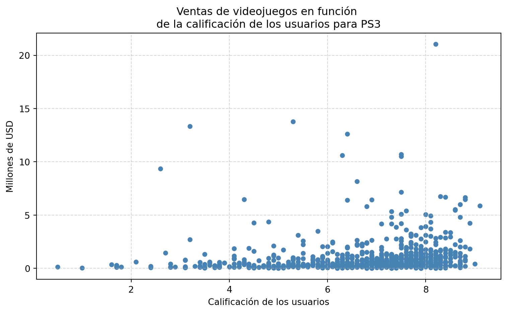
Los resultados del gráfico de dispersión no evidencian una tendencia marcada de la posible relación que pueda existir entre la calificación de los usuarios y las ventas totales de cada video juego. Si bien los valores ‘atípicos’ parecen mostrar una relación positiva entre las variables, resultan una minoría en el total de los datos. Basados en los resultados del punto 3.5 se realizan dos gráficos de dispersión adicional reduciendo el rango de datos para el total de ventas estableciendo para uno un límite superior de 2.5 millones y el otro de 0.7 millones.
3.6.2 Relación entre las reseñas de usuarios y el total de ventas parte 2
# Filtrar datos
games_red_users_PS3_2 = games_red_users_PS3[games_red_users_PS3['total_sales']<=2.5]
# Generar gráfico hasta 2.5 ventas
graficoDispersion(games_red_users_PS3_2,'user_score','Ventas de videojuegos en función de la calificación\n de los usuarios para PS3 (hasta 2.5 MM USD)')
# tercer cualtil como filtro
games_red_users_PS3_3 = games_red_users_PS3[games_red_users_PS3['total_sales']<=0.7]
# Generar gráfico hasta 0.7 ventas
graficoDispersion(games_red_users_PS3_3,'user_score','Ventas de videojuegos en función de la calificación\n de los usuarios para PS3 (hasta 0.7 MM USD)')<Figure size 1152x576 with 0 Axes>
<Figure size 1152x576 with 0 Axes>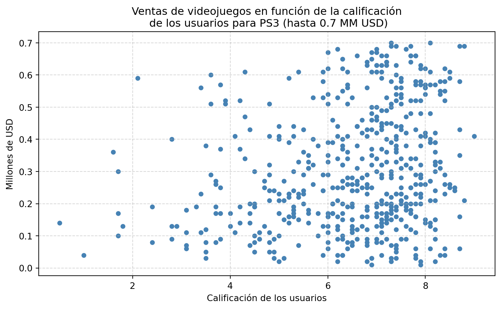
3.6.3 Calculo de correlaciones reseñas de usuarios frente a total de ventas
# Correlación con el conjunto completo para PS3
corr_PS3_1 = games_red_users_PS3['user_score'].corr(games_red_users_PS3['total_sales'])
print(f"La correlación entre las reseñas de usuarios y el total de ventas para la plataforma PS3 es de: {round(corr_PS3_1,2)}")
print()
# Correlación con el conjunto filtrado para ventas menores o iguales a 2.5 MM para PS3
corr_PS3_2 = games_red_users_PS3_2['user_score'].corr(games_red_users_PS3_2['total_sales'])
print(f"La correlación entre las reseñas de usuarios y el total de ventas (menores o iguales a 2.5 MM USD) para la plataforma PS3 es de : {round(corr_PS3_2,2)}")
print()
# Correlación con el conjunto filtrado para ventas menores o iguales a 0.7 MM para PS3
corr_PS3_3 = games_red_users_PS3_3['user_score'].corr(games_red_users_PS3_3['total_sales'])
print(f"La correlación entre las reseñas de usuarios y el total de ventas (menores o iguales a 0.7 MM USD) para la plataforma PS3 es de: {round(corr_PS3_3,2)}")La correlación entre las reseñas de usuarios y el total de ventas para la plataforma PS3 es de: 0.12
La correlación entre las reseñas de usuarios y el total de ventas (menores o iguales a 2.5 MM USD) para la plataforma PS3 es de : 0.25
La correlación entre las reseñas de usuarios y el total de ventas (menores o iguales a 0.7 MM USD) para la plataforma PS3 es de: 0.22No existe una correlación entre la calificación de los juegos por parte de los usuarios y el total de ventas alcanzadas, los valores de correlación más son cercanos a cero que a 1. Cuando se evalua con la totalidad de los juegos el resultado de la correlación es de 0.13, cuando se excluyen valores atípicos en las ventas la correlación alcanza a 0.23, al realizar el calculo usando el 75% de los primeros datos el resultado de la correlación es de 0.22. Con esto se concluye que la calificación o reseñas de usuarios no es una carcaterísitica que explique adecuadamente la variabilidad en el total de ventas de los juegos
3.6.4 Relación entre las reseñas de profesionales y el total de ventas parte 1
# Reducir el conjunto de datos a los registros y variables de interés incluyendo critic_score
games_red_pro_PS3 = games_red[['name','critic_score','genre','total_sales']][games_red['platform']=='PS3']
# Excluir los NaN
games_red_pro_PS3 = games_red_pro_PS3.dropna()
# Generar como índice el nombre del video juego
games_red_pro_PS3 = games_red_pro_PS3.set_index('name')
# Graficar los datos filtrados para critic_score
graficoDispersion(games_red_pro_PS3,'critic_score','Ventas de videojuegos en función \nde la calificación de los profesionales para PS3','orange')<Figure size 1152x576 with 0 Axes>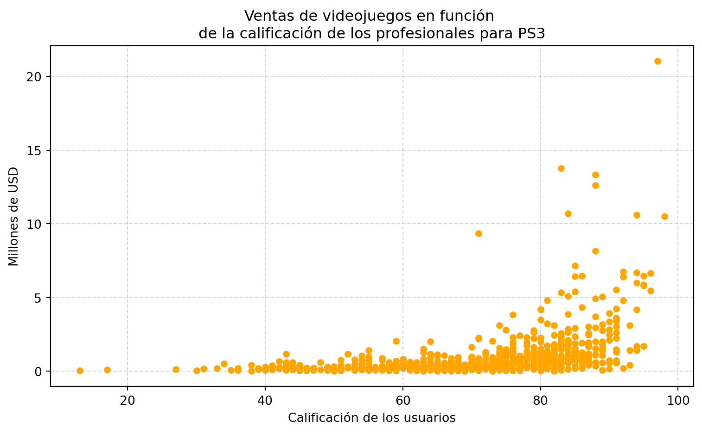
El comportamiento de las calificaciones y el total de ventas tiende a ser un poco más “ordenado”. Los valores “atípicos”, esto es, los videojuegos de valores de ventas altas se ubican en una escala de mayor calificación. En este caso pareciera observarse una relación más coherente, no obstante, los valores atípicos no permiten observar con mayor detalle el comportamiento de la generalidad de los datos pues estos quedan agrupados por debabo de 2.5 millones de USD
# Filtrar datos
games_red_pro_PS3_2 = games_red_pro_PS3[games_red_pro_PS3['total_sales']<=2.5]
# Generar gráfico hasta 2.5 ventas
graficoDispersion(games_red_pro_PS3_2,'critic_score','Ventas de videojuegos en función de la calificación\n de los profesionales para PS3 (hasta 2.5 MM USD)','orange')
# tercer cualtil como filtro
games_red_pro_PS3_3 = games_red_pro_PS3[games_red_pro_PS3['total_sales']<=0.7]
# Generar gráfico hasta 0.7 ventas
graficoDispersion(games_red_pro_PS3_3,'critic_score','Ventas de videojuegos en función de la calificación\n de los profesionales para PS3 (hasta 0.7 MM USD)','orange')<Figure size 1152x576 with 0 Axes>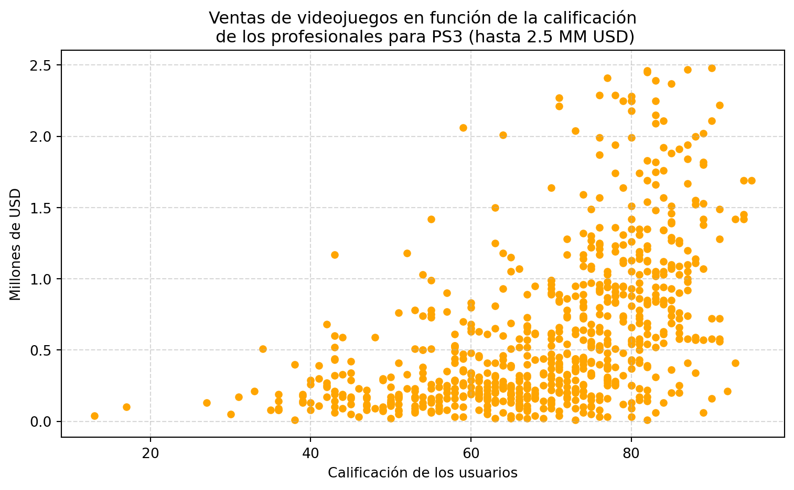
<Figure size 1152x576 with 0 Axes>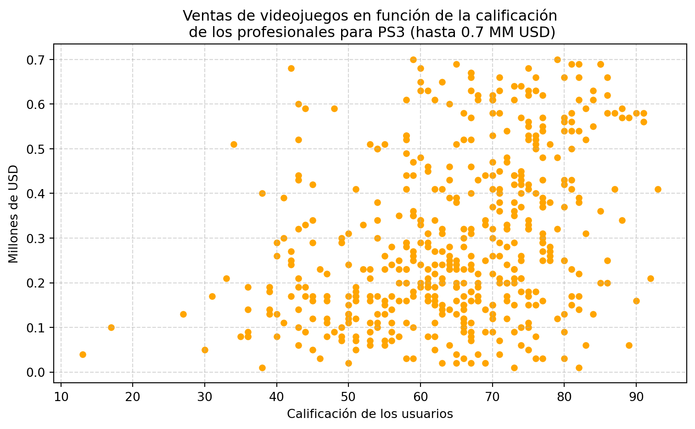
3.6.6 Calculo de correlaciones reseñas de profesionales frente a total de ventas
# Correlación con el conjunto completo para PS3 para critic_score
corr_PS3_4 = games_red_pro_PS3['critic_score'].corr(games_red_pro_PS3['total_sales'])
print(f"La correlación entre las reseñas de profesionales y el total de ventas para la plataforma PS3 es de: {round(corr_PS3_4,2)}")
print()
# Correlación con el conjunto filtrado para ventas menores o iguales a 2.5 MM para PS3 critic_score
corr_PS3_5 = games_red_pro_PS3_2['critic_score'].corr(games_red_pro_PS3_2['total_sales'])
print(f"La correlación entre las reseñas de profesionales y el total de ventas (menores o iguales a 2.5 MM USD) para la plataforma PS3 es de : {round(corr_PS3_5,2)}")
print()
# Correlación con el conjunto filtrado para ventas menores o iguales a 0.7 MM para PS3 critic_score
corr_PS3_6 = games_red_pro_PS3_3['critic_score'].corr(games_red_pro_PS3_3['total_sales'])
print(f"La correlación entre las reseñas de profesionales y el total de ventas (menores o iguales a 0.7 MM USD) para la plataforma PS3 es de: {round(corr_PS3_6,2)}")La correlación entre las reseñas de profesionales y el total de ventas para la plataforma PS3 es de: 0.43
La correlación entre las reseñas de profesionales y el total de ventas (menores o iguales a 2.5 MM USD) para la plataforma PS3 es de : 0.52
La correlación entre las reseñas de profesionales y el total de ventas (menores o iguales a 0.7 MM USD) para la plataforma PS3 es de: 0.36Los resultados de correlación resultan positivos, es decir, a medida que una variable aumenta la otra también. Si bien los valores de correlación no muestran una fuerte relación, estos si son mayores que los valores observador para user_score. La correlación más alta se da cuando se omiten los video juegos con ventas superiores a 2.5 MM de dólares
3.7 Comparación de juegos en otras plataformas
games_red_plaforms = dict()
for platform in selected_platforms:
games_red_plaforms[platform] = games_red[['name','total_sales']][games_red['platform'] == platform]
fig, axes = plt.subplots(3, 2, figsize=(14, 10))
for ax,key in zip(axes.flat,set(games_red_plaforms.keys()).difference({'PS3'})):
if key != 'PS3':
df_inner = pd.merge(games_red_plaforms['PS3'],games_red_plaforms[key], on = 'name', how = 'inner')
name_sales = 'total_sales_' + key
df_inner.columns = ['name','total_sales_PS3',name_sales]
df_inner = df_inner.sort_values(by = 'total_sales_PS3', ascending =False).set_index('name')
games_total = len(df_inner)
df_totals = df_inner.sum(axis = 0)
df_totals.index = ['total sales PS3',f"Total sales {key}"]
ax.bar(x = df_totals.index, height = df_totals ,color = ['steelblue','orange'])
ax.set_xticks([0, 1])
ax.set_xticklabels(df_totals.index, rotation=0, ha='center')
#ax.set_xticklabels(labels = df_totals.index, rotation=0,
# ha='center')
ax.set_yticklabels([])
ax.text(0,df_totals.iloc[0]-df_totals.iloc[0]*0.1,
f"{df_totals.iloc[0]:.2f}",
ha='center',
fontsize = 14)
ax.text(1,df_totals.iloc[1]-df_totals.iloc[0]*0.1,
f"{df_totals.iloc[1]:.2f}",
ha='center',
fontsize = 14)
ax.set_title(f'Comparación ventas totales: PS3 vs {key}\nTotal juegos en común:{games_total}')
axes.flat[-1].set_visible(False)
plt.tight_layout()
plt.show()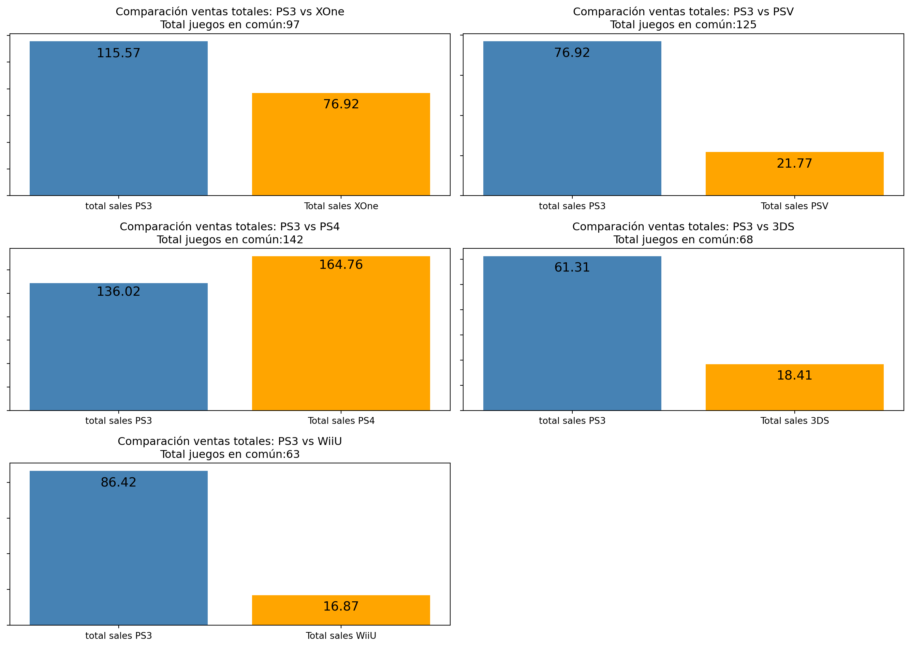
Teniendo como base la plataforma PS3, la comparación con las otras seis plataformas seleccionadas anteriormente muestran que: 1) PS4 es la plataforma con más juegos en común y a 2015 la cantidad de ventas de los mismos superan las alcanzadas en PS3. En total las dos plataformas tienen en común 142 juegos y las ventas se supera en 24.74 millones de dólares a favor de PS4. 2) La segunda plataforma con más juegos en común es PSV con 125, sin embargo, las ventas totales son considerablemente diferentes, evidenciando un valor de diferencia de 55.15 a favor de PS3. 3) Para las 3 plataformas restantes la cantidad de juegos en común no supera los 100, siendo las plataformas de Nintendo las de menos juegos en común y en todos los casos las ventas son superiores en PS3. 4) Pese a que la plataforma PS3 es la de mayor antiguedad entre las evaluadas se resalta que las ventas y su diferencia no se deben, principalmente, a la cantidad de tiempo en el mercado sino a la compatibilidad entre plataformas (en este caso plataformas del mismo fabricante)
3.8 Distribución de los juegos por género
# Agrupación por género de juego y conteo del total de juegos por género
games_by_genre_total = games_red.groupby('genre').size().sort_values(ascending = False).to_frame(name = 'total_games').reset_index()
# Agrupación por género de juego y total de ventas por juego por género
games_by_genre_sales = games_red.groupby('genre')['total_sales'].sum().to_frame(name = 'total_sales').reset_index()
# Union de la cantidad de ventas y cantidad de juegos por género
games_by_genre = pd.merge(games_by_genre_total, games_by_genre_sales, on = 'genre')
# Promedio de ventas por juego
games_by_genre['avg_by_game'] = round(games_by_genre['total_sales']/games_by_genre['total_games'],2)
games_by_genre = games_by_genre.sort_values(by = 'total_sales', ascending = False)# Grafico comparativo de ventas por género y cantidad de juegos
fig, ax1 = plt.subplots(figsize=(12, 6))
# Gráfico de barras pata total_sales
ax1.bar(x = games_by_genre['genre'],
height = games_by_genre['total_sales'],
color = '#4C72B0',
label='Ventas totales por género')
# Gráfico de líneas para juegos totales
ax2 = ax1.twinx()
ax2.plot(games_by_genre['genre'],
games_by_genre['avg_by_game'],
color='#C44E52',
marker='o',
linewidth=2,
label='Promedio por videojuego')
# Detalles del gráfico
# Eje Y principal
ax1.set_ylabel('Ventas totales (USD millones)',
fontsize=12)
for j,i in enumerate(games_by_genre['avg_by_game'].index):
ax2.text(j,
max(games_by_genre['avg_by_game']) + max(games_by_genre['avg_by_game']) * 0.015,
games_by_genre['avg_by_game'][i],
ha = 'center',
color = '#C44E52')
# Eje Y secundario
ax2.set_yticklabels([])
# Detalles comunes del grafico
plt.xlabel('Género de juego',
fontsize=12)
plt.xticks(rotation=45)
plt.title('Ventas por género de videojuego y promedio de ventas por juego',
fontsize=14,
fontweight='bold')
ax1.legend(loc = 'center right')
ax2.legend(loc = 'center right',
bbox_to_anchor=(1, 0.45),)
plt.tight_layout()
plt.show()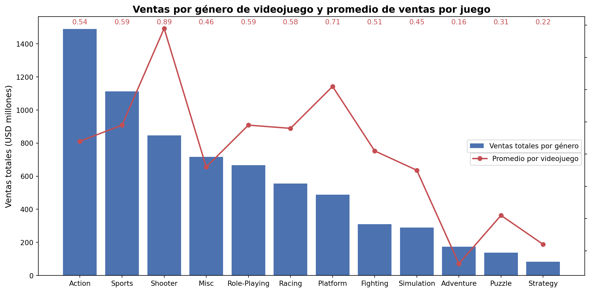
El genero con mayores ventas es Action, seguido de Sports y Shooter, esto quiere decir, en términos de millones de dólares son los de mayores ingresos. Para el caso del primero cada juego genera en promedio 0.54 millones de dólaes en ingresos, Sports genera 0.59 millones de dólares por juego. En el caso de shooter es el género con el promedio por juego más alto en ingreso: cada juego genera en promedio un ingreso de 0.89 millones de dólares. Platform es otro de los géneros con mayor ingreso promedio por juego alcanzando 0.71 millones de dólares. En el caso de los juegos de género Adventure, Puzzle y Strategy son los de menores ventas y a su vez son los de menor promedio de ingreso por juego. Adventure es el género con ingreso promedio por juego más bajo alcanzando 0.16 millones de dólares por juego. Se resalta que estos valores son globales, no se detallan por plataforma.
En conclusión, cada genero tiene un comportamiento diferente por juego, en promedio la venta de un juego del género shooter o Sports generan más ingresos que un juego de Adventure o Strategy, adicionalmente que los dos primeros mencionados tienen mayores ventas.
3.8.1 Distribución de los juegos por género y por plataforma
games_selected_platforms = games_red[games_red['platform'].isin(selected_platforms)]
pivot_genre_sales = pd.pivot_table(games_selected_platforms[['name','genre','platform','total_sales']],values = ['total_sales'], index = 'genre', columns = 'platform',aggfunc = ['sum'])
# Quitar el multiíndice en los nombres de columna, solo dejar el último (-1)
pivot_genre_sales.columns = [col[-1] for col in pivot_genre_sales.columns]
# Generar un arreglo de indices ordenados segun total de ventas
ordered = pivot_genre_sales.sum(axis=1).sort_values(ascending=False).index
# Generar gráfico
plt.figure(figsize=(12, 6))
pivot_genre_sales.loc[ordered].plot(kind = 'bar',
stacked = True,
colormap='tab10',
width = 0.9)
plt.title('Ventas por género por plataforma')
plt.xlabel('Genero')
plt.xticks(rotation = 45, ha = 'right')
plt.ylabel('Ventas en millones de USD')
plt.legend(title='Platform')
plt.tight_layout()
plt.show()<Figure size 1152x576 with 0 Axes>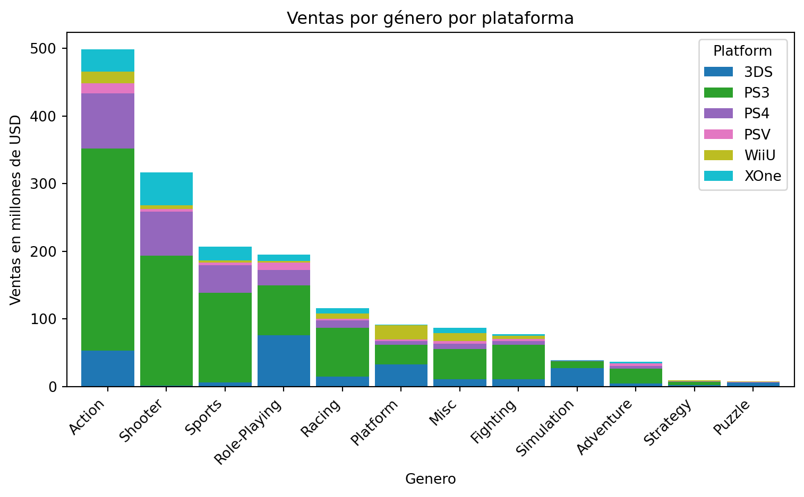
En cada paltaforma hay un género específico donde se presenta mayores ventas: 1) La plataforma 3DS tiene mayor proporción de ventas en ‘Role-Playing’, ‘Action’, ‘platform’ y ‘simulation’ 2) De PS3 ya se había mencionado que ‘Action’, ‘Shooter’ y ‘Sports’ son los generos donde hay mayor venta de videojuegos. 3) PS4 tiene un comportamiento similar a PS3, siendo los generos ya mencionados para PS3 donde se presenta mayor cantidad de ventas 4) PSV tiene dos generos donde marca mayor diferencia, estos son ‘Action’ y ‘Role-Playing’ 5) La plataforma WiiU Aparece con un mayor volumen de ventas de video juegos en los géneros ‘Platform’, ‘Action’ y ‘Misc’. 6) Finalmente, para la plataforma XOne el comportamiento es muy similar a PS3 siendo los géneros ‘Action’, ‘Shooter’ y ‘Sports’ donde hay mayor cantidad de ventas de videojuegos.
4. Perfil de usuario
Para cada región (NA, UE, JP y Otras)
# Función para generar graficas y datos de las cinco plataformas más importrantes por región
def detalleRegionPlataforma (data,region_sales,region_name, ax):
"""
Parameters.
----------
data : TYPE: Conjunto de datos en tipo DataFrame
DESCRIPTION: Conjunto de datos con la información de las ventas que incluye la columna de ventas en la región de interés
region_sales : TYPE: String
DESCRIPTION: Nombre de la columna (en data) que contiene las ventas de la región de interés ('na_sales', 'eu_sales',jp_sales','other_sales')
region_name : TYPE: String
DESCRIPTION: Texto (string) con el nombre de la región a analizar
ax : TYPE: matplotlib axes
DESCRIPTION: matplotlib.axes.Axes
Returns
-------
df: Datos de las cinco principales plataformas, según ventas, para la región de interés.
"""
# Generar DataFrame con los datos a entregar y graficar
df = data.groupby('platform')[region_sales].sum().sort_values(ascending=False).head().sort_values().to_frame().T
# Establecer título del gráfico
titulo = f"Ventas para las cinco principales plataformas en \n{region_name}"
# Generar gráfico
df.plot(kind='barh', width=3, ax=ax)
# Crear detalles del gráfico
ax.set_title(titulo)
ax.set_xlabel('Ventas en millones de USD')
ax.set_yticks([])
ax.legend(title='Plataforma')
ax.grid(True, linestyle='--', alpha=0.5)
return df.T4.1 Ventas por plataforma por región
fig, axes = plt.subplots(nrows=2, ncols=2, figsize=(12, 8))
# Crear lista de tuplas 'nombre de la columna' - 'nombre de la región'
regions = [('na_sales','América del Norte'),
('eu_sales','Europa'),
('jp_sales','Japón'),
('other_sales','Otras Regiones')]
# Convertir el objeto axes 2x2 (2D) a un arreglo 1x4 (1D)
axes = axes.flatten()
# Crear una lista vacía para almacenar los df resultado de la función
games_platform_regions = list()
# Bucle para graficar las 4 regiones
for i, (region_col, region_name) in enumerate(regions):
games_platform_regions.append(detalleRegionPlataforma(games_red, region_col, region_name, axes[i]))
# Plotear gráficos
plt.suptitle('Ventas para las principales plataformas por región',
fontsize=14,
fontweight='bold',
y=1.02)
plt.tight_layout()
plt.show()
# Unir DataFrames
games_unique = pd.concat(games_platform_regions,
axis = 1).dropna().index.tolist()
print(f"Las plataformas comunes en las 4 regiones entre entre las 5 mas vendidas son:\n {games_unique}")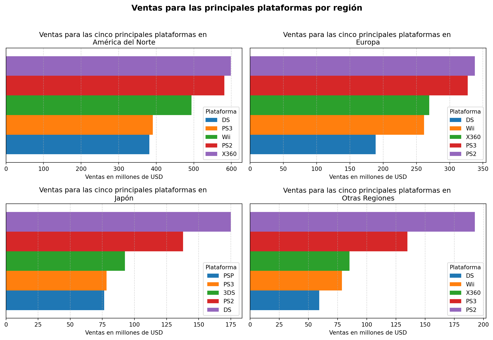
Las plataformas comunes en las 4 regiones entre entre las 5 mas vendidas son:
['DS', 'PS3', 'PS2']- América del norte: Las cinco principales plataformas en ventas de videojuegos son: X360, PS2, Wii, PS3 y DS. Las dos primeras suman ventas cercanas a los 600 millones de dólares mientras que las dos últimas están por debajo de los 400 millones de dólares.
- Europa: Las cinco principales plataformas en ventas de videojuegos son: PS2, PS3, X360, Wii y DS. Para las plataformas PS2 y PS3 (con los valores de ventas más altos) las ventas superan los 300 millones de dólares mientras que DS (la de menores ventas) no supera los 200 millones de dólares.
- Japón: Las cinco principales plataformas en ventas de videojuegos son: DS, PS2, 3DS, PS3 y PSP. DS alcanza los 175 millones de dólares, PS2 está por debajo de los 150 millones de dólares y las tres restantes presentan ventas inferiores a los 100 millones de dólares.
- Otras regiones: Las cinco principales plataformas en ventas de video juegos son: PS2, PS3, X360,Wii y DS. PS2 alcanza ventas cercanas a los 200 millones de dolares,PS3 supera los 125 millones de dólares en ventas, en el caso de las plataformas restantes las ventas están por debajo de los 100 millones de dólares.
En terminos generales el mercado de Norteamérica es el más grande casi duplicando el mercado de Europa que a su vez casi duplica el mercado de japón; las otras regiones tienen un comportamiento en números de ventas relativamente similar al de Japón. En cada región la plataforma lider es diferente. En el caso de América del Norte X360 es la de mayor ventas de videojuegos, en Europa se posiciona PS2 mientras que en Japón el mayor es DS. Para las 4 regiones observadas, 3 plataformas aparecen en el top 5 para todas, estas son: DS, PS3 y PS2.
4.2 Ventas por plataforma por región (visión global)
# A nivel global las 5 plataformas con las ventas más altas desde el año 2000
games_platform_global = games_red.groupby('platform')['total_sales'].sum().sort_values(ascending = False).head().sort_values(ascending = False)
# Agregar al dataframe las ventas por region
for region in ['na_sales', 'eu_sales', 'jp_sales', 'other_sales']:
df = games_red[['platform',f'{region}']][games_red['platform'].isin(games_platform_global.index)].groupby('platform')[f'{region}'].sum()
games_platform_global = pd.concat([
games_platform_global,
df
], axis=1)
# Crear un nuevo dataframe para presentar los datos de ventas en proporciones
games_platform_global = games_platform_global.reset_index()
games_platform_pct = games_platform_global[['platform']].copy()
# Bucle para calcular proporciones por plataforma por region
for region in ['na_sales', 'eu_sales', 'jp_sales', 'other_sales']:
games_platform_pct[f'{region}_pct'] = (
games_platform_global[f'{region}'] / games_platform_global['total_sales']
).round(4)4.2.1 Ventas por plataforma por región gráfico
# Gráfico de barras apiladas
games_platform_pct.plot(kind = 'bar',
stacked = True,
width = 0.9,
cmap='tab20c')
# Agregar texto de porcentajes al gráfico
for row in range(len(games_platform_pct)):
for col in range(1,len(games_platform_pct.columns)):
y = sum(games_platform_pct.iloc[row,1:col+1])
plt.text(x = row,
y = y-games_platform_pct.iloc[row,col]*0.5,
s = f"{games_platform_pct.iloc[row,col]*100:.2f}%",
ha = 'center',
va = 'center')
plt.title('Porcentaje de participación en ventas \npor plataforma en cada región')
plt.xticks(ticks=range(len(games_platform_pct)),
labels=games_platform_pct['platform'],
rotation=0)
plt.legend(title = 'Region',
labels=['N America', 'Europe', 'Japan', 'Others'],
loc='center right',
bbox_to_anchor=(1.30, 0.5))
plt.yticks([])
plt.tight_layout()
plt.show()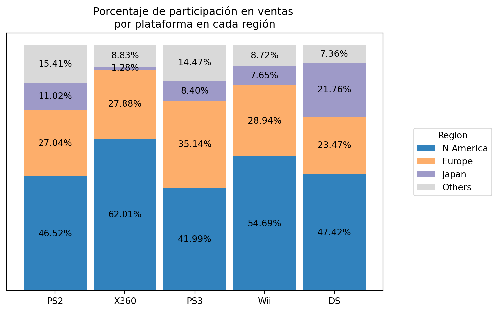
Como ya se había mencionado, Norteamérica, Europa y Jaṕon, son en ese orden, los mercados más importantes de videojuegos. Al detallar las cinco plataformas en cada una de las regiones se tiene:
- PS2. Un porcentaje superior al 70% del total de ventas se realiza en Norteamérica y Europa. La menor proporción de ventas se observa en japón.
- X360. Más del 60% de las ventas de videojuegos en esta plataforma se da en Norteamérica. Para esta plataforma el menor mercado es Japón pues el porcentaje de ventas apenas supera el 1%.
- PS3. Tiene una cuota de mercado importante en Europa alcanzando un valor alrededor del 35%. Para esta plataforma Norteamérica también tiene el mayor porcentaje del mercado con un valor cercano al 42% del total de ventas de videojuegos en esta plataforma.
- Wii. Presenta una participación importante en Norteamérica, superando el 50% del total de ventas de videojuegos de la plataforma. El mercado más bajo es Japón con un 7.65% del total de ventas de videojuegos.
- DS. Tiene una participación importante en Japón (comparado con las otras plataformas), aunque la mayor proporción de ventas de videojuegos también está en Norteamérica.
En todas las plataformas el mercado de videojuegos es mayoritario en Norteamérica seguido de Europa. En el caso de Japón es el mercado más pequeño en todos,excepto para DS plataforma que presenta la proporción más pequeña de mercado en otras regiones.
4.3 Ventas por región por plataforma (Visión global)
# Crear una copia transpuesta del anterior df
games_region_global = games_platform_global.T
# Cambiar los nombres de las columnas
games_region_global.columns = games_region_global.iloc[0,:]
# Seleccionar solo las filas con los datos relevantes
games_region_global = games_region_global.iloc[2:,:]
# Cambiar los datos a números
games_region_global = games_region_global.apply(pd.to_numeric, errors='coerce')
# Crear una columna de totales
games_region_global['total_sales'] = games_region_global.sum(axis = 1)
# Crear una lista de las 5 plataformas disponibles en el df
platforms = games_region_global.iloc[:,:-1].columns.tolist()
# Crear un nuevo dataframe con proporciones de venta por region por plataforma
games_region_pct = games_region_global.index.to_frame().copy()
for platform in platforms:
games_region_pct[f'{platform}_pct'] = round(games_region_global[f'{platform}'] / games_region_global['total_sales'], 4)
games_region_pct = games_region_pct.iloc[:,1:]4.3.1 Ventas por región por plataforma gráfico
games_region_pct = games_region_pct.reset_index()
games_region_pct.columns = ['Region'] + platforms
games_region_pct.plot(kind = 'bar',
stacked = True,
width = 0.9,
cmap='Paired')
# Agregar texto de porcentajes al gráfico
for row in range(len(games_region_pct)):
for col in range(1,len(games_region_pct.columns)):
y = sum(games_region_pct.iloc[row,1:col+1])
plt.text(x = row,
y = y-games_region_pct.iloc[row,col]*0.5,
s = f"{games_region_pct.iloc[row,col]*100:.2f}%",
ha = 'center',
va = 'center')
plt.title('Porcentaje de participación en ventas \npor region para cada plataforma')
plt.xticks(ticks=range(len(games_region_pct)),
labels=['N America', 'Europe', 'Japan', 'Others'],
rotation=0)
plt.legend(title = 'Platform',
labels=platforms,
loc='center right',
bbox_to_anchor=(1.30, 0.5))
plt.yticks([])
plt.tight_layout()
plt.show()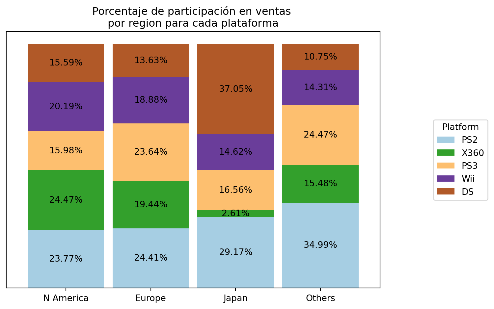
Los detalles del mercado visto por región se observan así: 1) Norteamérica: El porcentaje más alto de mercado lo tiene la plataforma X360 con un porcentaje algo mayor al 24% aunque PS2 también tiene una participación en el mercado cercana a 24%. PS3 y DS tienen las participaciones más pequeñas ambas con valores que rondan el 16%. 2) Europa: las plataformas PS2 y PS3 en conjunto tienen una participación cercana al 48% en el mercado de videojuegos, a su vez, X360 y Wii tienen porcentajes de perticipación similares que rondan el 19% cada una. 3) Japón: La mayor participación del mercado la tiene DS con un valor que ronda el 37% del total de ventas de videojuegos en la región. X360 es la de menor participación alcanzando un valor del 2.61%. La segunda plataforma en importancia en esta región es PS2 que tiene un valor alrededor del 29% del total de mercado. 4) Otras regiones: la plataforma PS2 tiene la mayor participación con un valor que ronda el 35% del total de ventas de videojuegos, seguido de PS3. X360 y Wii tienen porcentajes de participación similar con porcentajes cercanos al 15% y 14% respectivamente.
En 3 de las 4 regiones PS2 tiene las mayores ventas de videojuegos, en el caso de X360 lídera en norteamérica pero en el resto de regiones ocupa esta en tercer lugar o por debajo. Las plataformas desarrolladas por Nintendo ocupan los últimos lugares en cuotas de mercado a excpeción de DS en Japón que lidera las ventas de videojuegos.
4.4 Ventas por género por región
# A nivel global los 5 géneros con las ventas más altas desde el año 2000
games_genre_global = games_red.groupby('genre')['total_sales'].sum().sort_values(ascending = False).head().sort_values(ascending = True)
# Agregar al dataframe las ventas por region
for region in ['na_sales', 'eu_sales', 'jp_sales', 'other_sales']:
df = games_red[['genre',f'{region}']][games_red['genre'].isin(games_genre_global.index)].groupby('genre')[f'{region}'].sum()
games_genre_global = pd.concat([
games_genre_global,
df
], axis=1)
# Crear un nuevo dataframe para presentar los datos de ventas en proporciones
games_genre_global = games_genre_global.reset_index()
games_genre_pct = games_genre_global[['genre']].copy()
# Bucle para calcular proporciones por genero por region
for region in ['na_sales', 'eu_sales', 'jp_sales', 'other_sales']:
games_genre_pct[f'{region}_pct'] = (
games_genre_global[f'{region}'] / games_genre_global['total_sales']
).round(4)4.4.1 Ventas por género por región gráfico
# Gráfico de barras apiladas
games_genre_pct.plot(kind = 'barh',
stacked = True,
width = 0.9,
cmap='Dark2')
# Agregar texto de porcentajes al gráfico
for row in range(len(games_genre_pct)):
for col in range(1,len(games_genre_pct.columns)):
x = sum(games_genre_pct.iloc[row,1:col+1])
plt.text(y = row,
x = x-games_genre_pct.iloc[row,col]*0.25,
s = f"{games_genre_pct.iloc[row,col]*100:.2f}%",
ha = 'center',
va = 'center',
fontsize = 7)
plt.title('Porcentaje de participación en ventas \npor género en cada región')
plt.yticks(ticks=range(len(games_genre_pct)),
labels=games_genre_pct['genre'],
rotation=0)
plt.legend(title = 'Region',
labels=['N America', 'Europe', 'Japan', 'Others'],
loc='upper center',
bbox_to_anchor=(0.4, 0),
ncol = 4)
plt.xticks([])
plt.tight_layout()
plt.show()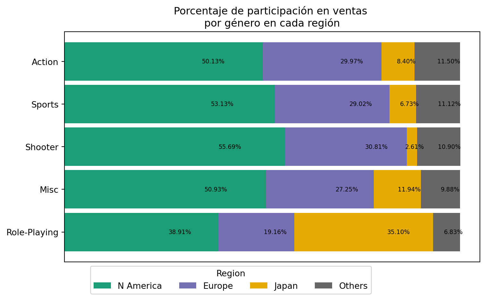
Al detallar el comportamiento de los géneros de videojuegos por cada región se detalla que todos los roles tienen una proporción que coincide con las ventas por región en general de videojuegos: una mayor proporción en Norteamérica y en Europa. Algunos aspectos a destacar son: 1) Shooter: es un género poco comercial en japón, de las ventas de los videojuegos clasificados en este género, apenas el 2.61% se relacionan a ventas en Japón.En contratste, resulta un género bastante atractivo en Norteamérica. 2) Role-Playing: se destaca en el mercado de Japón alcanzando una participación del 35% del total de las ventas de videojuegos del género, a su vez, en Europa presenta la menor proporción de ventas.
4.5 Ventas por region por género
# Crear una copia transpuesta del anterior df
games_genre_region = games_genre_global.T
# Renombrar las columnas
games_genre_region.columns = games_genre_region.loc['genre'].tolist()
# Seleccionar solo las filas con los datos relevantes
games_genre_region = games_genre_region.iloc[2:,:]
# Crear una columna de totales
games_genre_region.loc[:, 'total_sales'] = games_genre_region.sum(axis=1)
# Crear una lista de las 5 plataformas disponibles en el df
genres = games_genre_region.iloc[:,:-1].columns.tolist()
# Crear un nuevo dataframe con proporciones de venta por region por plataforma
games_genre_region_pct = games_genre_region.index.to_frame().copy()
# Convertir a números las columnas
games_genre_region = games_genre_region.apply(pd.to_numeric, errors='coerce')
# Calcular proporciones
for genre in genres:
games_genre_region_pct[f'{genre}_pct'] = round(games_genre_region[f'{genre}'] / games_genre_region['total_sales'], 4)
games_genre_region_pct = games_genre_region_pct.iloc[:,1:]4.5.1 Ventas por region por género gráfico
games_genre_region_pct = games_genre_region_pct.reset_index()
games_genre_region_pct.columns = ['Region'] + genres
# Crear gráfico
games_genre_region_pct.plot(kind = 'barh',
stacked = True,
width = 0.9,
cmap='Accent')
# Agregar texto de porcentajes al gráfico
for row in range(len(games_genre_region_pct)):
for col in range(1,len(games_genre_region_pct.columns)):
x = sum(games_genre_region_pct.iloc[row,1:col+1])
plt.text(y = row,
x = x-games_genre_region_pct.iloc[row,col]*0.30,
s = f"{games_genre_region_pct.iloc[row,col]*100:.2f}%",
ha = 'center',
va = 'center',
fontsize = 7)
plt.title('Porcentaje de participación en ventas \npor región para cada género')
plt.yticks(ticks=range(len(games_genre_region_pct)),
labels=['N América','Europa','Japón','Otras'],
rotation=0)
plt.legend(title = 'Region',
labels=games_genre_region_pct.columns.tolist()[1:],
loc='upper center',
bbox_to_anchor=(0.4, 0),
ncol = 4)
plt.xticks([])
plt.tight_layout()
plt.show()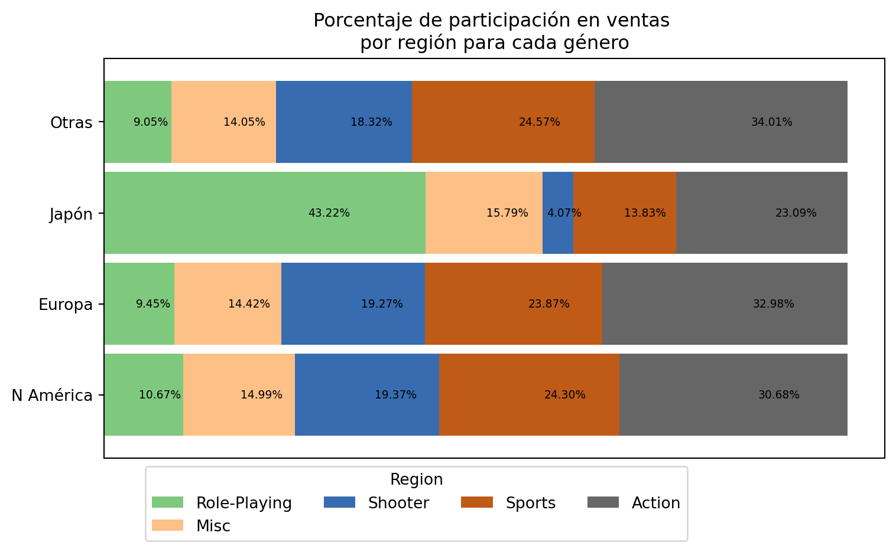
Para todas las regiones el genero ‘Action’ Es el de mayores ventas, excepto en Japón que muestra los juegos pertenecientes al género ‘Role-Playing’ como los de mayores ventas. Si bien en el género ‘Shooter’ aparecía como dominante en Norteamética, la realidad es que en esta región tiene un mayor porcentaje de participación el género ‘Sports’ situación que es similar a las demás regiones, exceptuando Japón ya que esta región el segundo género dominate es miscelania. En conclusión, las regiones Norteamérica, Europa y Otras tienen perfiles de consumo de videojuegos similares mientras que Japón es diferente. En el primer grupo de regiones es más común los juegos del género ‘Action’, ‘Sports’ y ‘Shooter’ mientras que en Japón dominan ‘Role-Playing’, ‘Action’ y ‘Misc’
4.6 Clasificaciones de ESRB vs ventas por region
# Total de juegos
games_region_esrb = games_red.groupby('rating').size()
games_region_esrb.name = 'total_games'
# Agregar la cantidad de juegos vendidos por región
for region in ['na_sales', 'eu_sales', 'jp_sales', 'other_sales']:
# Excluir los juegos con ventas cero para no contarlo entre los vendidos
df = games_red[games_red[region] != 0]
# Conteo de la cantidad de juegos vendidos
df = df.groupby('rating').size()
df.name = f"{region}"
# Unir las series de conteo por región
games_region_esrb = pd.concat([games_region_esrb,
df],
axis = 1)
# Rellenar con cero regiones donde no hay conteo de juegos para cierto rating
games_region_esrb = games_region_esrb.fillna(0)
# Ordenar por tipo de calificación la cantidad de juegos con rating
games_region_esrb = games_region_esrb.sort_values(by='total_games',
ascending = False)
# Calcular proporciones del total de juegos de cada rating en cada region
games_region_esrb_pct = games_region_esrb.index.to_frame().copy()
for region in ['na_sales', 'eu_sales', 'jp_sales', 'other_sales']:
games_region_esrb_pct[f'{region}_pct'] = (
games_region_esrb[f'{region}'] / games_region_esrb['total_games']
).round(4)*100
games_region_esrb_pct = games_region_esrb_pct.iloc[:,1:]4.6.1 Clasificaciones de ESRB vs ventas por region gráfico
# Generar gráfico de barras
games_region_esrb_pct.plot(kind = 'bar',
width = 0.7)
plt.legend(title = 'Region',
labels=['N América','Europa','Japón','Otras'],
loc='lower center',
bbox_to_anchor=(0.5, -0.4),
ncols = 4)
plt.xticks(rotation = 30)
plt.yticks(range(0, 101, 5))
plt.xlabel('Clasificaciones de ESRB')
plt.ylabel('Porcentaje de juegos vendidos')
plt.title ('Proporción de juegos vendidos en cada región del total clasificados')
plt.grid(True, which='major', axis='y', linestyle='--', linewidth=0.5, alpha=0.7)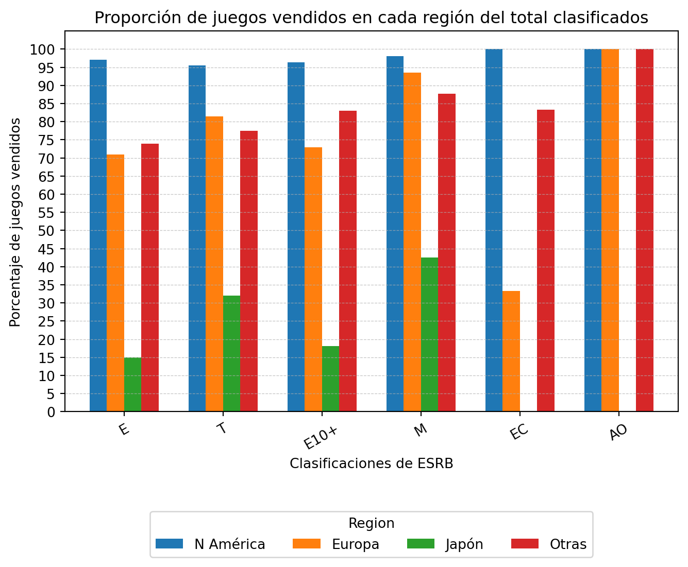
Debido a que existe una proporción de valores ausentes en la variable ‘Rating’ (Clasificaciones de ESRB) el análisis se hace con base en la cantidad de juegos calificados y la proporción de esta cantidad vendida en cada una de las regiones.
En el caso de Norteamérica, todas las categorías tienen resultados por encima del 95%, es decir, del total de disponibles para cada clasificación al menos el 95% tuvo venta en esta región.
En las demás regiones los valores son más bajos, quiere decir que no todos los juegos en cierta calificación fueron vendidos o comercializados. En Europa los los juegos calificacos coomo “Everyone” (E) “Everyone 10+” (E10+) tienen ventas que no superan el 75% del total de juegos en estas clasificaciones.
Para Japón los números son mucho menores, esto podría deberse a no comercialización de ciertos nombres o a restricciones de comercialización de ciertas calificaciones, sin embargo, llama la atención que clasificaciones como E y E10+ tienen ventas que no superan el 20% del total de títulos en esta categoría y no hay ventas de juegos clasificados en “Adult Only” (AO), el caso de la clasificación “Mature 17+” tiene el mayor porcentaje de jkuegos comercializados llegando a 40%.
No se observa una diferencia relevante entre las ventas de juegos y su clasificación, las diferencias en porcentaje de juegos vendidos (del total de titulos) puede deberse a restricciones de comercialización más que a la decisión de compra o no, por parte del consumidor, en función de su clasificación. Es posible que hayan títulos de juegos que se lancen y comercialicen solo en ciertas regiones (Norteamérica, por ejemplo) y que no salgan al mercado en otras regiones (como Japón).
5. Pruebas de hipótesis
alpha = 0.055.1 Calificaciones Xbox One y PC - Parámetros estadísticos
# Filtrar los datasets a usar en las pruebas de hipótesis
# Xbox One y PC
games_XOne = games[games['platform']=='XOne']['user_score'].dropna()
games_PC = games[games['platform']=='PC']['user_score'].dropna()print('Parámetros estadísticos de las calificaciones de usuarios para los juegos de la plataforma Xbox One: ')
print(f"Se tienen {len(games_XOne)} registros de juegos calificados por los usuarios para la plataforma Xbox One") #
print(f"El promedio de calificación por usuarios en juegos de Xbox One es de {round(games_XOne.mean(),2)}")
print(f"La desviación estándar de las calificaciones por usuarios en juegos de Xbox One es de {round(games_XOne.std(),2)}")
print()
print('Parámetros estadísticos de las calificaciones de usuarios para los juegos para PC: ')
print(f"Se tienen {len(games_PC)} registros de juegos calificados por los usuarios para los juegos para PC") #
print(f"El promedio de calificación por usuarios para los juegos para PC es de {round(games_PC.mean(),2)}")
print(f"La desviación estándar de las calificaciones por usuarios para los juegos para PC es de {round(games_PC.std(),2)}")Parámetros estadísticos de las calificaciones de usuarios para los juegos de la plataforma Xbox One:
Se tienen 182 registros de juegos calificados por los usuarios para la plataforma Xbox One
El promedio de calificación por usuarios en juegos de Xbox One es de 6.52
La desviación estándar de las calificaciones por usuarios en juegos de Xbox One es de 1.38
Parámetros estadísticos de las calificaciones de usuarios para los juegos para PC:
Se tienen 770 registros de juegos calificados por los usuarios para los juegos para PC
El promedio de calificación por usuarios para los juegos para PC es de 7.06
La desviación estándar de las calificaciones por usuarios para los juegos para PC es de 1.535.1.1 Calificaciones Xbox One y PC - Evaluación de varianzas
# Test de Levene para verificar si las varianzas son iguales
statistical,p_value = st.levene(games_XOne,games_PC)
# Hipótesis nula (Ho): las varianzas en las calificaciones de los juegos por parte de los usuarios de Xbox One y PC son iguales.
# Hipótesis alternativa (Ha): las varianzas en las calificaciones de los juegos por parte de los usuarios de Xbox One y PC no son iguales.
print('valor p:', p_value)
if (p_value < alpha):
print("Rechazamos la hipótesis nula, es decir, existe evidencia estadística para concluir que las varianzas en las calificaciones de los juegos, por parte de los usuarios, de Xbox One y PC no son iguales")
else:
print("No podemos rechazar la hipótesis nula, es decir, existe evidencia estadística para concluir que las varianzas en las calificaciones de los juegos, por parte de los usuarios, de Xbox One y PC son iguales ")valor p: 0.2693951512047048
No podemos rechazar la hipótesis nula, es decir, existe evidencia estadística para concluir que las varianzas en las calificaciones de los juegos, por parte de los usuarios, de Xbox One y PC son iguales 5.1.2 Calificaciones Xbox One y PC - Evaluación de promedios
# Prueba de hipótesis de igualdad de medias (promedios) de evaluación de juegos por parte de los usuarios
# La prueba de Levene permite concluir que las varianzas son iguales por lo que el parámetro 'equal_var' se establece en True
results = st.ttest_ind(games_XOne,games_PC, equal_var = True)
# Hipótesis nula (Ho): las medias (promedios) en las calificaciones de los juegos por parte de los usuarios de Xbox One y PC son iguales.
# Hipótesis alternativa (Ha): las medias (promedios) en las calificaciones de los juegos por parte de los usuarios de Xbox One y PC no son iguales.
print('valor p:', results.pvalue)
if (results.pvalue < alpha):
print("Rechazamos la hipótesis nula, es decir, existe evidencia estadística para concluir que el promedio de las calificaciones de los juegos, por parte de los usuarios, de Xbox One y PC no son iguales")
else:
print("No podemos rechazar la hipótesis nula, es decir, existe evidencia estadística para concluir que el promedio de las calificaciones de los juegos, por parte de los usuarios, de Xbox One y PC son iguales")valor p: 1.3896435533548819e-05
Rechazamos la hipótesis nula, es decir, existe evidencia estadística para concluir que el promedio de las calificaciones de los juegos, por parte de los usuarios, de Xbox One y PC no son igualesLas calificaciones que entregan los usuarios para los juegos de las plataformas Xbox One y PC, presentan comportamientos diferentes. Si bien la variabilidad de los datos es similar en ambas plataformas (la medida de dispersión de los datos es similar), al comparar el promedio de calificaciones de los juegos para cada plataforma se encuentra que no son iguales. El promedio de la calificación de los usuarios de los juegos para PC es de 7.06 mientras que para los juegos de Xbox One la calificación promedio es de 6.52.
5.2 Calificaciones Action y Sports - Parámetros estadísticos
# Filtrar los datasets a usar en las pruebas de hipótesis
# Action y Sports
games_Action = games[games['genre']=='Action']['user_score'].dropna()
games_Sports = games[games['genre']=='Sports']['user_score'].dropna()
print('Parámetros estadísticos de las calificaciones de usuarios para los juegos del género "Action": ')
print(f"Se tienen {len(games_Action)} registros de juegos calificados por los usuarios para el género 'Action'") #
print(f"El promedio de calificación por usuarios en juegos clasificados como 'Action' es de {round(games_Action.mean(),2)}")
print(f"La desviación estándar de las calificaciones por usuarios juegos clasificados como 'Action' es de {round(games_Action.std(),2)}")
print()
print('Parámetros estadísticos de las calificaciones de usuarios para los juegos del género "Sports": ')
print(f"Se tienen {len(games_Sports)} registros de juegos calificados por los usuarios para el género 'Sports'") #
print(f"El promedio de calificación por usuarios en juegos clasificados como 'Sports' es de {round(games_Sports.mean(),2)}")
print(f"La desviación estándar de las calificaciones por usuarios juegos clasificados como 'Sports' es de {round(games_Sports.std(),2)}")Parámetros estadísticos de las calificaciones de usuarios para los juegos del género "Action":
Se tienen 1830 registros de juegos calificados por los usuarios para el género 'Action'
El promedio de calificación por usuarios en juegos clasificados como 'Action' es de 7.05
La desviación estándar de las calificaciones por usuarios juegos clasificados como 'Action' es de 1.43
Parámetros estadísticos de las calificaciones de usuarios para los juegos del género "Sports":
Se tienen 1102 registros de juegos calificados por los usuarios para el género 'Sports'
El promedio de calificación por usuarios en juegos clasificados como 'Sports' es de 6.96
La desviación estándar de las calificaciones por usuarios juegos clasificados como 'Sports' es de 1.615.2.1 Calificaciones Action y Sports - Evaluación de varianzas
# Test de Levene para verificar si las varianzas son iguales
statistical,p_value = st.levene(games_Action,games_Sports)
# Hipótesis nula (Ho): las varianzas en las calificaciones de los juegos de los géneros Action y Sports son iguales.
# Hipótesis alternativa (Ha): las varianzas en las calificaciones de los juegos de los géneros Action y Sports no son iguales.
print('valor p:', p_value)
if (p_value < alpha):
print("Rechazamos la hipótesis nula, es decir, existe evidencia estadística para concluir que las varianzas en las calificaciones \nde los juegos, por parte de los usuarios, de los géneros Action y Sports no son iguales")
else:
print("No podemos rechazar la hipótesis nula, es decir, existe evidencia estadística para concluir que las varianzas en las calificaciones\n de los juegos, por parte de los usuarios, de los géneros Action y Sports son iguales ")valor p: 0.00018557225393395747
Rechazamos la hipótesis nula, es decir, existe evidencia estadística para concluir que las varianzas en las calificaciones
de los juegos, por parte de los usuarios, de los géneros Action y Sports no son iguales5.2.2 Calificaciones Action y Sports - Evaluación de promedios
# Prueba de hipótesis de igualdad de medias (promedios) de evaluación de juegos por parte de los usuarios
# La prueba de Levene permite concluir que las varianzas no son iguales por lo que el parámetro 'equal_var' se establece en False
results = st.ttest_ind(games_Action,games_Sports, equal_var = False)
# Hipótesis nula (Ho): las medias (promedios) en las calificaciones de los juegos por parte de los usuarios de los géneros Action y Sports son iguales.
# Hipótesis alternativa (Ha): las medias (promedios) en las calificaciones de los juegos por parte de los usuarios de los géneros Action y Sports no son iguales.
print('valor p:', results.pvalue)
if (results.pvalue < alpha):
print("Rechazamos la hipótesis nula, es decir, existe evidencia estadística para concluir que el promedio de las calificaciones \nde los juegos, por parte de los usuarios, de los géneros Action y Sports no son iguales")
else:
print("No podemos rechazar la hipótesis nula, es decir, existe evidencia estadística para concluir que el promedio de las \ncalificaciones de los juegos, por parte de los usuarios, de los géneros Action y Sports son iguales")valor p: 0.12024530426191243
No podemos rechazar la hipótesis nula, es decir, existe evidencia estadística para concluir que el promedio de las
calificaciones de los juegos, por parte de los usuarios, de los géneros Action y Sports son igualesLas calificaciones que entregan los usuarios para los juegos de los géneros ‘Action’ y ‘Sports’, presentan comportamientos similar. En este caso la medida de dispersión de los datos es diferente,pese a esto, al comparar el promedio de calificaciones de los juegos asignados a los géneros Action y Sports se observa que son iguales. El promedio de la calificación de los usuarios de para los juegos del género Action es de 7.05 y el promedio para los juegos del género Sports es de 6.96.
En ambas situaciones el planteamiento de las pruebas de hipótesis era el mismo, es decir, evaluar si las medias (promedios) entre dos poblaciones era estadísticamente igual. En el caso de las plataformas Xbox One y PC el planteamiento era ‘verificar si las medias son iguales’ mientras que para los juegos de los géneros Action y Sport era ‘verificar si las medias son diferentes’, aunque el planteamiento parece contrario, en si el planteamiento de las hipótesis eran las mismas para ambos casos:
Hipótesis Nula(Ho): las medias de las calificaciones los usuarios de las dos muestras son son iguales
Hipótesis Alternativa (Ha): las medias de las calificaciones los usuarios de las dos muestras no son son iguales.
La hipótesis nula se se expresa en terminos que se puedan interpretar como ‘no hay diferencia entre los grupos de juegos en función de la calificación que dan los usuarios’ y como esto supone una igualdad la prueba se hace entendiendo que se evalúa un parámetro alrededor de un valor central, por lo que la evaluación es asociada a una prueba de hipótesis de dos colas.
6. Conclusión General
El dataset trabajado muestra información relevante respecto al comportamiento del mercado de videojuegos durante un periodo superior a 30 años. Los últimos 20 años se muestra información relevante respecto al cambio en este mercado además del comportamiento de los fabricantes en relación al lanzamiento de las plataformas que ejecutan los juegos en el mercado.En terminos generales se puede concluir que: 1) Cada fabricante genera lanzamiento de nuevas plataformas de manera periodica, estos lanzamientos buscan aumentar las ventas de video juegos y la participación en el mercado. 2) Desde el inicio del siglo XXI la industria de videojuegos experimentó un auge de crecimiento que multiplicaron las ventas se experimentaban en el siglo anterior, adicionalmente se posicionaron 3 fabricantes como los más fuertes: Sony, Nintendo y Microsoft. 3) El mayor mercado de videojuegos es Norteamérica, seguido de Europa y Otras Regiones. Si Japón es el mercado más pequeño (de los detallados en el dataset) tiene números importantes en ventas y presenta particularidades que lo diferencian de otros mercados. 3) Para 2015 las plataformas de Sony dominan el mercado de video juegos, Microsoft tienen una participación importante mientras Nintendo parece ceder terreno. 4) en general, los juegos de mayor demanda parecen ser los catalogados como ‘Action’, ‘Sports’ y ‘Shooter’, no obstante, en Japón esta dinámica parece cambiar ya que los juegos de ‘Role-Playing’ son los más comercializados en esta región. 5) Parece no existir una relación entre la clasificacion ESRB y las ventas de videojuegos, es decir, dicha clasificación parece no afectar la decisión de compra. Es de resaltar la clasificación ESRB carece de información completa, por lo cual, esta conclusión podría varían con la totalidad de la información, pues si se evidenció en Japón este tipo de clasificación si resulta sensible a las ventas.